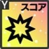
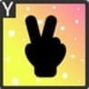
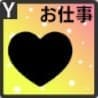
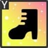
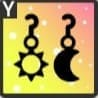
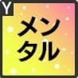
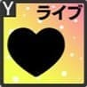
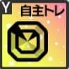

| ID | キャラ | アイドル名 | 初期レアリティ | 傾向 | タイプ | 構成 | 衣装・ヘアスタイル | ボーカル | ダンス | ビジュアル | スタミナ | ライブスキル1名前 | ライブスキル1効果 | ライブスキル2名前 | ライブスキル2効果 | ライブスキル3名前 | ライブスキル3効果 | エール | 入手方法 | 実装日 |
|---|---|---|---|---|---|---|---|---|---|---|---|---|---|---|---|---|---|---|---|---|
| 1 | 小美山愛 | 嘘から出た実 小美山愛 | ★3 | ボーカル | サポーター | APP | なし | 73271 | 58974 | 51825 | 4437 | 【A】999回！ | 370%のスコア獲得 ボーカルが高い1人に7段階ボーカル上昇効果[25ビート] ボーカルが高い1人の低下効果回復 スタミナ:114 CT:30 | 【P】たゆまぬ努力 | ボーカルが高い1人に9段階ビートスコア上昇効果[38ビート] ボーカルが高い1人に10段階消費スタミナ低下効果[38ビート] スタミナ:237 CT:50 | 【P】仲間の重み | ビート時 120%のスコア獲得 スタミナ:169 確率10% CT:35 | 恒常 | 2021/6/24 | |
| 2 | 小美山愛 | ごほうび発見 小美山愛 | ★4 | ビジュアル | サポーター | AAP | ベーシックスタイル | 65912 | 59921 | 73902 | 5510 | 【A】おしゃれは足元から | 430%のスコア獲得 スタミナが低い1人のスタミナを5700回復 スタミナ:161 CT:40 | 【A】お気に入り発見 | 480%のスコア獲得 ビジュアルが高い3人に8段階クリティカル率上昇効果[38ビート] ビジュアルが高い3人に6段階ビジュアル上昇効果[38ビート] 自身に不調効果[50ビート] スタミナ:196 CT:30 | 【P】気分上々 | クリティカル発動時 110%のスコア獲得 スタミナ:154 CT:25 | 恒常 | 2021/6/24 | |
| 3 | 小美山愛 | 掴みとる夢 小美山愛 | ★5 | ダンス | スコアラー | SPAP | ノーブルリリーズ | 58870 | 90407 | 67280 | 5220 | 【SP】限界超えても | 1800%のスコア獲得 自身に6段階ダンス上昇効果[78ビート] スタミナ:563 | 【A】まっすぐな情熱 | 490%のスコア獲得、強化効果が多い程効果上昇 スタミナ:157 CT:30 | 【P】新たな息吹 | ビート時 自身に4段階ビートスコア上昇効果[75ビート] スタミナ:174 確率10% CT:30 | 恒常 | 2021/6/24 | |
| 4 | 井川葵 | ホームグラウンド 井川葵 | ★3 | ダンス | スコアラー | SPAP | なし | 46465 | 73271 | 53613 | 5423 | 【SP】実績なんて関係ないと思う | 1300%のスコア獲得 クリティカル発動時 510%のスコア獲得 スタミナ:473 | 【A】恵みの雨 | 420%のスコア獲得 自身に7段階クリティカル率上昇効果[30ビート] スタミナ:133 CT:30 | 【P】雨空見上げて | クリティカル率上昇状態の時 クリティカル発動時 150%のスコア獲得 スタミナ:211 CT:50 | 恒常 | 2021/6/24 | |
| 5 | 井川葵 | 冷めた夜 井川葵 | ★4 | ダンス | スコアラー | SPAP | ベーシックスタイル | 51931 | 81891 | 59921 | 6061 | 【SP】僕は僕以外の人にはなれない | 1320%のスコア獲得、コンボ数が多い程効果上昇 スタミナ:1039 | 【A】ラフコーデ | 380%のスコア獲得 50コンボ以上時 110%のスコア獲得 100コンボ以上時 150%のスコア獲得 スタミナ:186 CT:40 | 【P】いつもとは違う夜 | 50コンボ以上時 自身に5段階クリティカル率上昇効果[34ビート] 100コンボ以上時 自身に6段階ダンス上昇効果[34ビート] スタミナ:248 CT:50 | 恒常 | 2021/6/24 | |
| 6 | 井川葵 | 濡れた髪は何を語る 井川葵 | ★5 | ダンス | バッファー | AAP | ノーブルリリーズ | 63075 | 77792 | 69382 | 5800 | 【A】熱狂の余韻 | 560%のスコア獲得 スコアラータイプ2人に5段階クリティカル率上昇効果[80ビート] スタミナ:187 CT:50 | 【A】ステージの華 | 390%のスコア獲得 スコアラータイプ2人の強化効果を7延長 スタミナ:131 CT:50 | 【P】安堵の笑顔 | 誰かがSPスキル発動前 対象1人に9段階ダンス上昇効果[32ビート] スタミナ:272 CT:50 |  | 恒常 | 2021/6/24 |
| 7 | 白石千紗 | 課題クリア！ 白石千紗 | ★3 | ビジュアル | バッファー | AAP | なし | 57188 | 50039 | 71485 | 4930 | 【A】一緒ならばきっと | 380%のスコア獲得 ビジュアルが高い3人に5段階ビジュアル上昇効果[35ビート] スタミナ:133 CT:30 | 【A】束の間の休息 | 480%のスコア獲得 スタミナ:135 CT:30 | 【P】褒めて伸ばして | スタミナ80%以上の時 120%のスコア獲得 センターに6段階クリティカル率上昇効果[21ビート] スタミナ:220 CT:50 | 恒常 | 2021/6/24 | |
| 8 | 白石千紗 | 昼下がりのお買いもの 白石千紗 | ★4 | ボーカル | サポーター | APP | ベーシックスタイル | 73902 | 65912 | 59921 | 5510 | 【A】ショッピングガール | 580%のスコア獲得 ボーカルが高い3人の低下効果回復 スタミナ:175 CT:50 | 【P】幸せな瞬間 | クリティカル発動時 スコアラータイプ1人に10段階ビートスコア上昇効果[46ビート] 【ライブバトルのみ】同じレーンの相手に4段階ボーカル低下効果[35ビート] スタミナ:467 CT:50 | 【P】レッツコーディネート | 誰かのスタミナが30%以下の時 対象1人に11段階Aスキルスコア上昇効果[28ビート] 対象1人のスタミナを4200回復 スタミナ:727 CT:30 | 恒常 | 2021/6/24 | |
| 9 | 白石千紗 | 照度を増す自信 白石千紗 | ★5 | ビジュアル | バッファー | APP | アセンブルハーモニー | 67280 | 58870 | 84100 | 5800 | 【A】コーディネートセンス | 450%のスコア獲得 全員に6段階ビジュアル上昇効果[30ビート] スタミナ:158 CT:30 | 【P】恐怖に打ち勝つ心 | ビート時 センターに5段階ビジュアル上昇効果[56ビート] スタミナ:230 確率10％ CT:30 | 【P】シュシュの力 | 誰かがSPスキル発動前 対象1人に8段階の集目効果[30ビート] 165%のスコア獲得 スタミナ:277 CT:50 | 恒常 | 2021/6/24 | |
| 10 | 佐伯遙子 | 後輩思いのお姉さん 佐伯遙子 | ★3 | ダンス | サポーター | APP | なし | 51825 | 73271 | 58974 | 4437 | 【A】休みは大事 | 390%のスコア獲得 ダンスが高い1人に7段階ダンス上昇効果[30ビート] スタミナ:135 CT:30 | 【P】心頭冷却 | ダンスが高い1人に7段階Aスキルスコア上昇効果[38ビート] ダンスが高い1人に10段階消費スタミナ低下効果[38ビート] スタミナ:239 CT:50 | 【P】笑顔を忘れず | ビート時 120%のスコア獲得 スタミナ:169 確率10% CT:40 | 恒常 | 2021/6/24 | |
| 11 | 佐伯遙子 | 全力タイムセール 佐伯遙子 | ★4 | ビジュアル | サポーター | APP | ベーシックスタイル | 61917 | 53928 | 77896 | 6061 | 【A】めげない心 | 460%のスコア獲得 スコアラータイプ1人に10段階スコア上昇効果[40ビート] 自身に20段階消費スタミナ上昇効果[20ビート] スタミナ:157 CT:30 | 【P】節約上手 | ビート時 145%のスコア獲得 スタミナ:145 確率10% CT:30 | 【P】本気の二十代 | 誰かがSPスキル発動前 対象1人に8段階ビジュアル上昇効果[33ビート] スタミナ:249 CT:50 | 恒常 | 2021/6/24 | |
| 12 | 佐伯遙子 | とても頼れるお姉さん 佐伯遙子 | ★5 | ボーカル | バッファー | APP | アセンブルハーモニー | 81997 | 65177 | 56767 | 6380 | 【A】輝く一等星 | 450%のスコア獲得 全員に6段階ボーカル上昇効果[30ビート] スタミナ:158 CT:30 | 【P】大人の嗜み | スコアラータイプ1人に9段階Aスキルスコア上昇効果[39ビート] スタミナ:265 CT:45 | 【P】対等な先輩 | 誰かがSPスキル発動前 対象1人の強化効果を16延長 対象1人に8段階クリティカル率上昇効果[28ビート] スタミナ:438 ライブ中1回のみ | 恒常 | 2021/6/24 | |
| 13 | 赤崎こころ | たまには本気で 赤崎こころ | ★3 | ダンス | バッファー | AAP | なし | 50039 | 71485 | 57188 | 4930 | 【A】オールアウト | 420%のスコア獲得 スタミナ50%以下の時 ダンスが高い3人に7段階クリティカル率上昇効果[37ビート] スタミナ:141 CT:30 | 【A】全力トレーニング | 390%のスコア獲得 自身に7段階ダンス上昇効果[30ビート] スタミナ:135 CT:30 | 【P】せんぱい達の背中を | クリティカル発動時 160%のスコア獲得 スタミナ:225 CT:60 | 恒常 | 2021/6/24 | |
| 14 | 赤崎こころ | 無邪気ないたずらっ子 赤崎こころ | ★4 | ボーカル | スコアラー | SPAP | ベーシックスタイル | 85886 | 63916 | 55926 | 4959 | 【SP】キラキラアイドルスマイル！ | 1690%のスコア獲得、残スタミナが少ない程効果上昇 スタミナ:536 | 【A】ケロケロ～ | 430%のスコア獲得 スタミナ50%以下の時 自身に9段階ボーカル上昇効果[35ビート] スタミナ:159 CT:30 | 【P】ドタバタ昼下がり | 自身に14段階スコア上昇効果[41ビート] 自身に20段階消費スタミナ上昇効果[40ビート] スタミナ:272 CT:60 | 恒常 | 2021/6/24 | |
| 15 | 赤崎こころ | 新生リズノワの誇り 赤崎こころ | ★5 | ビジュアル | サポーター | APP | ノーブルリリーズ | 69382 | 63075 | 77792 | 5800 | 【A】アイドルスマイル | 610%のスコア獲得 全員のCTを15減少 スタミナ:196 CT:60 | 【P】期待の新戦力 | 誰かがAスキル発動前 対象1人に10段階Aスキルスコア上昇効果[41ビート] スタミナ:310 CT:60 | 【P】脳殺ポージング | ビート時 自身に4段階ビートスコア上昇効果[75ビート] スタミナ:174 確率10% CT:30 |  | 恒常 | 2021/6/24 |
| 16 | 長瀬琴乃 | 見なれた光景 長瀬琴乃 | ★3 | ボーカル | バッファー | AAP | なし | 71485 | 57188 | 50039 | 4930 | 【A】暴走する親切心 | 390%のスコア獲得 センターに7段階ボーカル上昇効果[30ビート] スタミナ:135 CT:30 | 【A】驚愕のレッスンルーム | 480%のスコア獲得 スタミナ:135 CT:30 | 【P】お疲れ様の二人 | 誰かがSPスキル発動前 対象1人に7段階ボーカル上昇効果[35ビート] スタミナ:231 CT:60 | 恒常 | 2021/6/24 | |
| 17 | 長瀬琴乃 | センチメンタルな午後 長瀬琴乃 | ★4 | ビジュアル | スコアラー | SPAP | ベーシックスタイル | 59921 | 51931 | 81891 | 6061 | 【SP】今度一緒に歌おうか | 1350%のスコア獲得 クリティカル発動時 750%のスコア獲得 スタミナ:538 | 【A】窓の向こうには | 530%のスコア獲得 スタミナ:149 CT:30 | 【P】とあるレイニーデイ | クリティカル発動時 170%のスコア獲得 スタミナ:238 CT:60 | 恒常 | 2021/6/24 | |
| 18 | 長瀬琴乃 | イノセントステージ 長瀬琴乃 | ★5 | ボーカル | バッファー | SPAP | クイーンオブザナイト | 84100 | 67280 | 58870 | 5800 | 【SP】月の光を手に | 1900%のスコア獲得 全員に7段階クリティカル率上昇効果[110ビート] スタミナ:963 | 【A】最高の私を | 430%のスコア獲得、クリティカル率上昇状態の段階数が多い程効果上昇 隣接するアイドルに4段階ボーカル上昇効果[25ビート] スタミナ:319 CT:35 | 【P】月下の歌姫 | クリティカル率アップ状態の時 自身に8段階ボーカル上昇効果[35ビート] スタミナ:230 CT:50 | 恒常 | 2021/6/24 | |
| 19 | 早坂芽衣 | バランス感覚UP 早坂芽衣 | ★3 | ビジュアル | スコアラー | SPAP | なし | 55400 | 48251 | 75059 | 4930 | 【SP】トリカラ大好き | 1700%のスコア獲得 スタミナ:478 | 【A】特訓はタイヤの上で | 420%のスコア獲得、強化効果が多い程効果上昇 スタミナ:135 CT:30 | 【P】天性のバランス感覚 | 自身に7段階ビジュアル上昇効果[32ビート] スタミナ:183 CT:50 | 恒常 | 2021/6/24 | |
| 20 | 早坂芽衣 | メイクアップタ～イム 早坂芽衣 | ★4 | ボーカル | サポーター | APP | ベーシックスタイル | 73902 | 65912 | 59921 | 5510 | 【A】イチオシコスメ | 440%のスコア獲得 スコアラータイプ2人のスタミナを5200回復 スタミナ:163 CT:40 | 【P】キュートにキメて | スタミナ80%以上の時 90%のスコア獲得、ファン数割合が少ない程効果上昇 自身のCTを22減少 スタミナ:331 CT:60 | 【P】ガールズトーク | センターに9段階スコア上昇効果[25ビート] センターのスタミナを2900回復 スタミナ:229 CT:70 |  | 恒常 | 2021/6/24 |
| 21 | 早坂芽衣 | カメラ越しの笑顔 早坂芽衣 | ★5 | ダンス | スコアラー | SPAA | クイーンオブザナイト | 54665 | 86202 | 63075 | 6380 | 【SP】ここから宇宙へ！ | 2000%のスコア獲得 スタミナ:562 | 【A】水面の私へ | 520%のスコア獲得、残スタミナが多い程効果上昇 スタミナ:188 CT:50 | 【A】ガールミーツキャット | 430%のスコア獲得 自身に9段階スコア上昇効果[30ビート] スタミナ:140 CT:30 | 恒常 | 2021/6/24 | |
| 22 | 伊吹渚 | 背中を追って 伊吹渚 | ★3 | ボーカル | サポーター | APP | なし | 73271 | 58974 | 51825 | 4437 | 【A】背中追いかけて | 400%のスコア獲得 スタミナが低い1人のスタミナを4800回復 スタミナ:146 CT:40 | 【P】青春全力ダッシュ | センターに8段階ボーカル上昇効果[36ビート] スタミナ:236 CT:50 | 【P】まだまだ前へ | ビート時 120%のスコア獲得 スタミナ:169 確率10% CT:40 | 恒常 | 2021/6/24 | |
| 23 | 伊吹渚 | おひさまダイアリー 伊吹渚 | ★4 | ダンス | バッファー | AAP | ベーシックスタイル | 59921 | 73902 | 65912 | 5510 | 【A】春色ダイアリー | 360%のスコア獲得 クリティカル発動時 230%のスコア獲得 スタミナ:166 CT:40 | 【A】思い馳せて | 460%のスコア獲得 スタミナ60%以上の時 ダンスが高い3人に8段階クリティカル率上昇効果[40ビート] スタミナ:157 CT:30 | 【P】うららかな午後 | クリティカル率アップ状態の時 自身に7段階ダンス上昇効果[40ビート] スタミナ:230 CT:60 | 恒常 | 2021/6/24 | |
| 24 | 伊吹渚 | 背中をあずけて 伊吹渚 | ★5 | ビジュアル | サポーター | APP | クイーンオブザナイト | 69382 | 60972 | 86202 | 5220 | 【A】分かち合う喜び | 480%のスコア獲得 全員のスタミナを4800回復 スタミナ:183 CT:50 | 【P】内緒の気持ち | 誰かのスタミナが50%以下の時 対象1人のスタミナを3800回復 対象1人に6段階Aスキルスコア上昇効果[32ビート] スタミナ:328 CT:50 | 【P】二人で見た光景 | 誰かがSPスキル発動前 対象1人に7段階クリティカル係数上昇効果[37ビート] 対象1人に15段階消費スタミナ低下効果[45ビート] スタミナ:258 CT:60 | 恒常 | 2021/6/24 | |
| 25 | 一ノ瀬怜 | 夜の自主トレ 一ノ瀬怜 | ★3 | ダンス | サポーター | AAP | なし | 51825 | 73271 | 58974 | 4437 | 【A】時に孤独に | 350%のスコア獲得 ダンスが高い3人のCTを25減少 スタミナ:134 CT:30 | 【A】仲間と一緒に | 400%のスコア獲得 スタミナが低い1人のスタミナを4800回復 スタミナ:146 CT:40 | 【P】万事徹底 | ビート時 120%のスコア獲得 スタミナ:169 確率10% CT:40 | 恒常 | 2021/6/24 | |
| 26 | 一ノ瀬怜 | 密かなお楽しみ 一ノ瀬怜 | ★4 | ダンス | スコアラー | SPAP | ベーシックスタイル | 51931 | 81891 | 59921 | 6061 | 【SP】必ずトップになろう！ | 1200%のスコア獲得、強化効果が多い程効果上昇 ダンス上昇状態の時 550%のスコア獲得 スタミナ:524 | 【A】家族の力 | 530%のスコア獲得 スタミナ:149 CT:30 | 【P】負けない気持ち | ダンス上昇状態の時 自身に8段階ダンス上昇効果[44ビート] 自身に10段階消費スタミナ上昇効果[65ビート] スタミナ:289 CT:65 |  | 恒常 | 2021/6/24 |
| 27 | 一ノ瀬怜 | 高台をかける薫風 一ノ瀬怜 | ★5 | ダンス | バッファー | APP | アセンブルハーモニー | 58870 | 84100 | 67280 | 5800 | 【A】優勝への決意 | 450%のスコア獲得 全員に6段階ダンス上昇効果[30ビート] スタミナ:158 CT:30 | 【P】踊る理由 | 170%のスコア獲得 自身に2段階クリティカル率上昇効果[45ビート] スタミナ:281 CT:50 | 【P】精一杯の恩返し | クリティカル発動時 85%のスコア獲得 自身のCTを19減少 スタミナ:264 CT:60 | 恒常 | 2021/6/24 | |
| 28 | 神崎莉央 | 折れない心 神崎莉央 | ★3 | ボーカル | バッファー | APP | なし | 71485 | 57188 | 50039 | 4930 | 【A】束の間の休息 | 410%のスコア獲得 スコアラータイプ2人に6段階ボーカル上昇効果[25ビート] スタミナ:134 CT:30 | 【P】まだまだ出来るはず | 170%のスコア獲得 スタミナ:238 CT:50 | 【P】止めない歩み | 誰かがAスキル発動前 対象1人に7段階ボーカル上昇効果[32ビート] スタミナ:183 CT:50 | 恒常 | 2021/6/24 | |
| 29 | 神崎莉央 | スイーツライフ 神崎莉央 | ★4 | ダンス | バッファー | AAP | ベーシックスタイル | 55926 | 79895 | 63916 | 5510 | 【A】映えパンケーキ | 440%のスコア獲得 クリティカル率上昇状態の時 150%のスコア獲得 スタミナ:166 CT:40 | 【A】見られちゃった | 430%のスコア獲得 自身に8段階ダンス上昇効果[30ビート] スタミナ:150 CT:30 | 【P】パワー注入 | クリティカル率上昇状態の時 自身に12段階スコア上昇効果[40ビート] スタミナ:228 CT:60 | 恒常 | 2021/6/24 | |
| 30 | 神崎莉央 | 空気を震わせて 神崎莉央 | ★5 | ボーカル | スコアラー | SPAP | ノーブルリリーズ | 86202 | 63075 | 54665 | 6380 | 【SP】気高く咲き誇れ | 1550%のスコア獲得、残スタミナが多い程効果上昇 スタミナ:561 | 【A】圧巻のステージ | 520%のスコア獲得 ボーカル上昇状態の時 自身のスタミナを1600回復 スタミナ:157 CT:30 | 【P】アイドルの誇り | 自身に8段階ボーカル上昇効果[29ビート] 自身に8段階消費スタミナ低下効果[34ビート] スタミナ:218 CT:50 | 恒常 | 2021/6/24 | |
| 31 | 天動瑠依 | 秘密会議 天動瑠依 | ★3 | ビジュアル | サポーター | APP | なし | 58974 | 51825 | 73271 | 4437 | 【A】作戦通りに | 330%のスコア獲得 スコアラータイプ2人のスタミナを3800回復 スコアラータイプ2人に7段階ビートスコア上昇効果[40ビート] スタミナ:146 CT:40 | 【P】不動のセンター | 50コンボ以上時 センターに9段階ビジュアル上昇効果[34ビート] スタミナ:251 CT:50 | 【P】厚い人望 | ビート時 自身のスタミナを4400回復 スタミナ:191 確率10% CT:50 | 恒常 | 2021/6/24 | |
| 32 | 天動瑠依 | ほっと帰り道 天動瑠依 | ★4 | ボーカル | スコアラー | SPAA | ベーシックスタイル | 83889 | 61917 | 53928 | 5510 | 【SP】少しくらいいいよね？ | 1630%のスコア獲得、コアファン率が多い程効果上昇 スタミナ:533 | 【A】憩いのひととき | 450%のスコア獲得 スタミナ60%以上の時 自身に7段階ボーカル上昇効果[30ビート] スタミナ:152 CT:30 | 【A】照れくさい日常 | 430%のスコア獲得、残スタミナが多い程効果上昇 スタミナ:156 CT:50 | 恒常 | 2021/6/24 | |
| 33 | 天動瑠依 | ありのままの姿で 天動瑠依 | ★5 | ボーカル | バッファー | AAP | シュヴァリエール | 84100 | 67280 | 58870 | 5800 | 【A】夜の勝利宣言 | 550%のスコア獲得 スコアラータイプ2人に8段階ボーカル上昇効果[31ビート] スタミナ:186 CT:50 | 【A】新人トップたる所以 | 550%のスコア獲得 自身に8段階クリティカル率上昇効果[45ビート] スタミナ:188 CT:50 | 【P】努力の結晶 | 誰かがSPスキル発動前 対象1人の強化効果を3段階増強 スタミナ:341 CT:56 | 恒常 | 2021/6/24 | |
| 34 | 白石沙季 | 早朝猛特訓 白石沙季 | ★3 | ボーカル | サポーター | AAP | なし | 73271 | 58974 | 51825 | 4437 | 【A】ハードレッスン | 380%のスコア獲得 ボーカルが高い3人に5段階ボーカル上昇効果[35ビート] スタミナ:133 CT:30 | 【A】一息ついて | 400%のスコア獲得 スタミナが低い1人のスタミナを4800回復 スタミナ:146 CT:40 | 【P】元来、生真面目 | 50コンボ以上時 センターに8段階Aスキルスコア上昇効果[34ビート] 自身に5段階スタミナ消費増加効果[45ビート] スタミナ:205 CT:45 | 恒常 | 2021/6/24 | |
| 35 | 白石沙季 | もふもふショッピング 白石沙季 | ★4 | ビジュアル | バッファー | AAP | ベーシックスタイル | 67910 | 61917 | 75900 | 4959 | 【A】一目惚れの行方 | 520%のスコア獲得 スタミナ80%以上の時 全員に6段階クリティカル率上昇効果[35ビート] スタミナ:167 CT:40 | 【A】乙女爆発 | 440%のスコア獲得 クリティカル率アップ状態の時 150%のスコア獲得 スタミナ:166 CT:40 | 【P】出会いは突然に | 自身に7段階ビジュアル上昇効果[34ビート] スタミナ:196 CT:50 | 恒常 | 2021/6/24 | |
| 36 | 白石沙季 | 手を取り合って 白石沙季 | ★5 | ダンス | サポーター | APP | クイーンオブザナイト | 58870 | 84100 | 67280 | 5800 | 【A】先輩と姉の間 | 580%のスコア獲得 全員に8段階スコア上昇効果[30ビート] スタミナ:187 CT:50 | 【P】気持ち通じ合う手 | 誰かがAスキル発動前 対象1人に9段階Aスキルスコア上昇効果[37ビート] スタミナ:251 CT:40 | 【P】高まる気持ち | 誰かのスタミナが70%以下の時 対象1人のスタミナを5300回復 スタミナ:236 CT:50 | 恒常 | 2021/6/24 | |
| 37 | 川咲さくら | 元気100倍！ 川咲さくら | ★3 | ボーカル | スコアラー | SPAP | なし | 73271 | 53613 | 46465 | 5423 | 【SP】私も輝きたい！ | 1070%のスコア獲得、コンボ数が多い程効果上昇 スタミナ:481 | 【A】青春の汗 | 480%のスコア獲得 スタミナ:135 CT:30 | 【P】笑顔の裏側 | スタミナ80%以上の時 自身に8段階ボーカル上昇効果[37ビート] スタミナ:242 CT:60 | 恒常 | 2021/6/24 | |
| 38 | 川咲さくら | ジューシーランチ 川咲さくら | ★4 | ダンス | サポーター | APP | ベーシックスタイル | 57923 | 81891 | 65912 | 4959 | 【A】とんかつパワー | 430%のスコア獲得 スタミナが低い1人のスタミナを5700回復 スタミナ:161 CT:40 | 【P】ソースは多め？ | 50コンボ以上時 全員に10段階Aスキルスコア上昇効果[46ビート] スタミナ:496 ライブ中1回のみ | 【P】胸の高鳴り | 自身に12段階スコア上昇効果[38ビート] スタミナ:217 CT:60 | 恒常 | 2021/6/24 | |
| 39 | 川咲さくら | 夢の共演 川咲さくら | ★5 | ボーカル | スコアラー | SPAP | アセンブルハーモニー | 88305 | 65177 | 56767 | 5800 | 【SP】太陽の光と共に | 1700%のスコア獲得、強化効果が多い程効果上昇 スタミナ:545 | 【A】大好きなあのキャラ | 450%のスコア獲得 自身に9段階ボーカル上昇効果[30ビート] スタミナ:159 CT:30 | 【P】人生の倍返し | 100コンボ以上時 140%のスコア獲得 自身に9段階ボーカル上昇効果[32ビート] スタミナ:432 ライブ中1回のみ | 恒常 | 2021/6/24 | |
| 40 | 奥山すみれ | 努力のたまもの 奥山すみれ | ★3 | ビジュアル | スコアラー | SPAP | なし | 55400 | 48251 | 75059 | 4930 | 【SP】世界で一番の幸せ者です！ | 1070%のスコア獲得、コンボ数が多い程効果上昇 スタミナ:481 | 【A】準備万端！ | 480%のスコア獲得 スタミナ:135 CT:30 | 【P】注目あびて | 50コンボ以上時 自身に8段階ビジュアル上昇効果[60ビート] スタミナ:394 ライブ中1回のみ | 恒常 | 2021/6/24 | |
| 41 | 奥山すみれ | ギリギリセーフ 奥山すみれ | ★4 | ダンス | バッファー | AAP | ベーシックスタイル | 57923 | 81891 | 65912 | 4959 | 【A】士気高める瞳 | 450%のスコア獲得 スタミナ50%以下の時 ダンスが高い3人に6段階ダンス上昇効果[35ビート] スタミナ:195 CT:30 | 【A】あふれる活力 | 550%のスコア獲得 スタミナ50%以下の時 センターの強化効果を2段階増強 スタミナ:184 CT:50 | 【P】ギリギリセーフ | スタミナ70%以下の時 ダンスが高い3人に7段階ダンス上昇効果[32ビート] スタミナ:402 CT:50 | 恒常 | 2021/6/24 | |
| 42 | 奥山すみれ | 小さなヒロイン 奥山すみれ | ★5 | ビジュアル | スコアラー | SPAP | シュヴァリエール | 65177 | 56767 | 88305 | 5800 | 【SP】世界を翔る！ | 1800%のスコア獲得 自身に10段階スコア上昇効果[80ビート] スタミナ:562 | 【A】イノセントアイドル | 470%のスコア獲得、残スタミナが多い程効果上昇 スタミナ:170 CT:40 | 【P】頭ぽんぽん | スコア上昇状態の時 330%のスコア獲得 スタミナ:463 ライブ中1回のみ | 恒常 | 2021/6/24 | |
| 43 | 成宮すず | へろへろランニング 成宮すず | ★3 | ビジュアル | スコアラー | SPAP | なし | 53613 | 46465 | 73271 | 5423 | 【SP】なかにゃかやりますわね！ | 1070%のスコア獲得、コンボ数が多い程効果上昇 スタミナ:481 | 【A】ガチンココーチ | 480%のスコア獲得 スタミナ:135 CT:30 | 【P】限界ランニング | ビート時 自身に3段階Aスキルスコア上昇効果[75ビート] スタミナ:170 確率10% CT:30 | 恒常 | 2021/6/24 | |
| 44 | 成宮すず | わくわくクッキング 成宮すず | ★4 | ボーカル | サポーター | APP | ベーシックスタイル | 75900 | 67910 | 61917 | 4959 | 【A】幸せ三段重ね | 430%のスコア獲得 スタミナが低い1人のスタミナを5700回復 スタミナ:161 CT:40 | 【A】クリーミーガール | 430%のスコア獲得 スタミナ70%以下の時 全員のスタミナを4300回復 全員に5段階Aスキルスコア上昇効果[30ビート] スタミナ:329 CT:40 | 【P】よくできました！ | ビート時 センターに4段階Aスキルスコア上昇効果[57ビート] スタミナ:172 確率10% CT:30 | 恒常 | 2021/6/24 | |
| 45 | 成宮すず | パワフルガール 成宮すず | ★5 | ビジュアル | スコアラー | SPAP | クイーンオブザナイト | 63075 | 54665 | 86202 | 6380 | 【SP】ここから未来へ | 1250%のスコア獲得、コンボ数が多い程効果上昇 スタミナ:562 | 【A】リトルスター | 470%のスコア獲得 自身に10段階スコア上昇効果[35ビート] スタミナ:157 CT:30 | 【P】女王の資質 | ビート時 自身に4段階Aスキルスコア上昇効果[63ビート] スタミナ:191 確率10% CT:30 | 恒常 | 2021/6/24 | |
| 46 | 兵藤雫 | つかの間の休息 兵藤雫 | ★3 | ボーカル | バッファー | AAP | なし | 71485 | 57188 | 50039 | 4930 | 【A】予習復習 | 480%のスコア獲得 ボーカルが高い3人に5段階Aスキルスコア上昇効果[35ビート] スタミナ:159 CT:50 | 【A】前進あるのみ | 390%のスコア獲得 自身に7段階ボーカル上昇効果[30ビート] スタミナ:135 CT:30 | 【P】支え合う仲間 | クリティカル発動時 90%のスコア獲得 自身に4段階Aスキルスコア上昇効果[25ビート] スタミナ:202 CT:50 | 恒常 | 2021/6/24 | |
| 47 | 兵藤雫 | 潜入、ドームツア 兵藤雫 | ★4 | ビジュアル | バッファー | AAP | ベーシックスタイル | 61917 | 53928 | 77896 | 6061 | 【A】これぞアイドルの力 | 450%のスコア獲得 センターに7段階ビジュアル上昇効果[35ビート] 自身に3段階ビジュアル低下効果[20ビート] スタミナ:149 CT:30 | 【A】無垢な笑顔 | 570%のスコア獲得 ビジュアルが高い3人に8段階クリティカル率上昇効果[46ビート] スタミナ:322 CT:50 | 【P】元気の源 | クリティカル発動時 自身のスタミナを4700回復 スタミナ:206 CT:50 | 恒常 | 2021/6/24 | |
| 48 | 兵藤雫 | 光の波 兵藤雫 | ★5 | ボーカル | サポーター | APP | アセンブルハーモニー | 77792 | 69382 | 63075 | 5800 | 【A】夢に見た光景 | 470%のスコア獲得 全員にコンボ継続効果[75ビート] スタミナ:157 CT:30 | 【P】尊きアイドル文化 | スコアラータイプ2人に16段階消費スタミナ低下効果[45ビート] 自身に8段階ビートスコア上昇効果[45ビート] スタミナ:281 CT:50 | 【P】笑顔の練習 | 誰かがAスキル発動前 対象1人に7段階Aスキルスコア上昇効果[36ビート] 自身に8段階のステルス効果[30ビート] スタミナ:218 CT:50 | 恒常 | 2021/6/24 | |
| 49 | 鈴村優 | 自主トレ日和 鈴村優 | ★3 | ダンス | バッファー | AAP | なし | 50039 | 71485 | 57188 | 4930 | 【A】足から始まる！ | 390%のスコア獲得 センターに7段階ダンス上昇効果[30ビート] スタミナ:135 CT:30 | 【A】念には念を | 400%のスコア獲得 50コンボ以上時 自身に8段階クリティカル率上昇効果[45ビート] スタミナ:138 CT:30 | 【P】まだまだこれから | クリティカル発動時 85%のスコア獲得 自身のCTを13減少 スタミナ:218 CT:60 | 恒常 | 2021/6/24 | |
| 50 | 鈴村優 | 至福の時間 鈴村優 | ★4 | ボーカル | スコアラー | SPAA | ベーシックスタイル | 83889 | 61917 | 53928 | 5510 | 【SP】もう、どうしたん？ | 1480%のスコア獲得、残スタミナが多い程効果上昇 スタミナ:536 | 【A】あの子のために | 440%のスコア獲得 スタミナ60%以上の時 自身に7段階ボーカル上昇効果[35ビート] スタミナ:153 CT:30 | 【A】くすぐったい午後 | 430%のスコア獲得 スタミナ80%以上の時 自身に8段階クリティカル率上昇効果[35ビート] スタミナ:135 CT:30 | 恒常 | 2021/6/24 | |
| 51 | 鈴村優 | 白の衝撃 鈴村優 | ★5 | ビジュアル | サポーター | APP | シュヴァリエール | 69382 | 60972 | 86202 | 5220 | 【A】ナイスアシスト！ | 450%のスコア獲得 スタミナが低い1人のスタミナを6400回復 スタミナ:172 CT:40 | 【P】駆け引き上手 | 全員に5段階ビートスコア上昇効果[45ビート] 全員の低下効果回復 スタミナ:280 CT:50 | 【P】差し伸べられる手 | 誰かがSPスキル発動前 対象1人のスタミナを5800回復 対象1人に8段階消費スタミナ低下効果[33ビート] スタミナ:277 CT:50 |  | 恒常 | 2021/6/24 |
| 52 | 長瀬琴乃 | 出発の時 長瀬琴乃 | ★2 | ダンス | サポーター | APP | なし | 63075 | 77792 | 69382 | 5800 | 【A】みんなのお見送り | 450%のスコア獲得 誰かがスコア上昇状態の時 対象2人のスタミナを6700回復 スタミナ:176 CT:40 | 【P】行ってきます | 誰かがAスキル発動前 対象1人に9段階Aスキルスコア上昇効果[37ビート] スタミナ:251 CT:40 | 【P】今日も良い日 | 誰かがSPスキル発動前 対象1人に9段階ダンス上昇効果[32ビート] スタミナ:272 CT:50 | その他 | 2021/6/24 | |
| 53 | 天動瑠依 | 夕暮れのホームで 天動瑠依 | ★1 | ダンス | スコアラー | SPAP | なし | 51931 | 81891 | 59921 | 6061 | 【SP】気を付けてね！ | 1180%のスコア獲得、残スタミナが多い程効果上昇 集目状態の時 500%のスコア獲得 スタミナ:533 | 【A】夕日に照らされ | 460%のスコア獲得、コアファン率が多い程効果上昇 スタミナ:150 CT:30 | 【P】ひと時の別れ | 自身に7段階の集目効果[50ビート] 自身に6段階ダンス上昇効果[26ビート] スタミナ:204 CT:50 | その他 | 2021/6/24 | |
| 54 | 神崎莉央 | 雨の中の帰路 神崎莉央 | ★1 | ビジュアル | サポーター | APP | なし | 67910 | 61917 | 75900 | 4959 | 【A】雨音響く夜 | 470%のスコア獲得 センターに10段階スコア上昇効果[34ビート] 自身に3段階ビジュアル低下効果[21ビート] スタミナ:148 CT:30 | 【P】やまない雨はない | 誰かがAスキル発動前 対象1人に8段階Aスキルスコア上昇効果[42ビート] スタミナ:254 CT:50 | 【P】反省の家路 | 80%のスコア獲得 自身のCTを11減少 スタミナ:196 CT:50 | その他 | 2021/6/24 | |
| 55 | 川咲さくら | 夜空に咲く花 川咲さくら | ★2 | ビジュアル | バッファー | AAP | なし | 69382 | 63075 | 77792 | 5800 | 【A】満開の花火 | 450%のスコア獲得、コンボ数が多い程効果上昇 自身に20段階消費スタミナ上昇効果[50ビート] スタミナ:202 CT:50 | 【A】夏の思い出 | 450%のスコア獲得 自身に9段階ビジュアル上昇効果[30ビート] スタミナ:159 CT:30 | 【P】みんなで浴衣 | 50コンボ以上時 ビジュアルが高い3人に7段階ビジュアル上昇効果[35ビート] スタミナ:251 CT:60 | その他 | 2021/6/24 | |
| 56 | 鈴村優 | 秘密のフォトセッション 鈴村優 | ★5 | ダンス | サポーター | APP | トロピカルフルール | 60972 | 86202 | 69382 | 5220 | 【A】グラビア撮影ごっこ | 460%のスコア獲得 スタミナが低い2人のスタミナを5400回復 スタミナ:170 CT:40 | 【P】シャッターチャンス | センターに7段階Aスキルスコア上昇効果[35ビート] センターに6段階クリティカル係数上昇効果[35ビート] スタミナ:276 CT:50 | 【P】綺麗に撮ってな | 自身に10段階ビートスコア上昇効果[33ビート] スタミナ:192 CT:40 | 限定 | 2021/6/30 | |
| 57 | 佐伯遙子 | 恵みのサニーシャワー 佐伯遙子 | ★5 | ビジュアル | スコアラー | SPAP | サマーホリデイ | 67280 | 58870 | 90407 | 5220 | 【SP】狙い撃ちしちゃうわよ！ | 1000%のスコア獲得 センター時 1340%のスコア獲得 スタミナ:846 | 【A】ウォータースプラッシュ | 550%のスコア獲得 自身の強化効果を2段階増強 スタミナ:322 CT:35 | 【P】ライブオンザビーチ | クリティカル発動時 150%のスコア獲得 自身に3段階クリティカル係数上昇効果[34ビート] スタミナ:453 CT:50 | 限定 | 2021/6/30 | |
| 58 | 兵藤雫 | ぷかぷかリゾート 兵藤雫 | ★2 | ダンス | スコアラー | SPAP | なし | 58870 | 90407 | 67280 | 5220 | 【SP】太陽が、まぶしい | 1900%のスコア獲得
スタミナ:534 | 【A】盛夏到来 | 350%のスコア獲得 クリティカル係数アップ状態の時 210%のスコア獲得 スタミナ:157 CT:30 | 【P】ご機嫌プールサイド | クリティカル発動時
120%のスコア獲得
スタミナ:169 CT:30 | イベント | 2021/6/30 | |
| 59 | 奥山すみれ | 常夏ウォーターパーク 奥山すみれ | ★5 | ボーカル | サポーター | APP | トロピカルフルール | 86202 | 69382 | 60972 | 5220 | 【A】お魚さんと一緒 | 500%のスコア獲得
全員に10段階消費スタミナ低下効果[58ビート] スタミナ:153 CT:50 | 【P】ドキドキレポート | 50コンボ以上時 スコアラータイプ1人に11段階スコア上昇効果[36ビート] スコアラータイプ1人のスタミナを3000回復 スタミナ:332 CT:60 | 【P】恥ずかしいっちゃ！ | 誰かのスタミナが70%以下の時 対象1人のスタミナを5300回復 スタミナ:236 CT:50 | 恒常 | 2021/7/12 | |
| 60 | 天動瑠依 | 真夏の恥じらいショット 天動瑠依 | ★5 | ビジュアル | バッファー | APP | トロピカルフルール | 67280 | 58870 | 84100 | 5800 | 【A】しなやかな曲線美 | 310%のスコア獲得 スコアラータイプ2人の強化効果を6延長 スタミナ:106 CT:30 | 【P】首から下はNG | スコアラータイプ1人に9段階ビジュアル上昇効果[37ビート] スタミナ:273 CT:50 | 【P】浜辺でポージング | スコアラータイプ2人に5段階ビートスコア上昇効果[70ビート] スコアラータイプ2人に7段階クリティカル率上昇効果[60ビート] スタミナ:213 ライブ中1回のみ | 恒常 | 2021/7/21 | |
| 61 | 早坂芽衣 | 二人きりのサンセットビーチ 早坂芽衣 | ★5 | ボーカル | バッファー | APP | ムーンライトラブサマー | 83889 | 67280 | 59080 | 5800 | 【A】笑顔照らす線香花火 | 500%のスコア獲得
センターに7段階クリティカル率上昇効果[35ビート] スタミナ:158 CT:30 | 【P】意見をぶつけ合った成果 | スコアラータイプ2人に10段階ビートスコア上昇効果[46ビート]
スタミナ:280 CT:50 | 【P】恋をしてるから | 自身に7段階ボーカル上昇効果[38ビート]
スタミナ:218 CT:50 | 限定 | 2021/7/31 | |
| 62 | 長瀬琴乃 | はにかみサマームーン 長瀬琴乃 | ★5 | ダンス | スコアラー | SPAP | ムーンライトラブサマー | 59080 | 89776 | 67700 | 5220 | 【SP】水着でお客さんの前に！？ | 2000%のスコア獲得
スタミナ:562 | 【A】秘密のジンクス | 450%のスコア獲得 自身に9段階ダンス上昇効果[30ビート] スタミナ:159 CT:30 | 【P】夏の正装 | 自身に8段階ビートスコア上昇効果[29ビート] 自身に5段階クリティカル係数上昇効果[29ビート] スタミナ:198 CT:40 | 限定 | 2021/7/31 | |
| 63 | 白石沙季 | 夏の夜に輝く星 白石沙季 | ★2 | ボーカル | サポーター | APP | なし | 85992 | 69382 | 61182 | 5220 | 【A】満天の星空 | 460%のスコア獲得
ボーカルが高い1人に8段階スコア上昇効果[35ビート] スタミナ:149 CT:30 | 【P】思い出の夜景 | ビート時
145%のスコア獲得 スタミナ:204 確率10% CT:30 | 【P】夏の空気感じて | 誰かのスタミナが70%以下の時 対象1人のスタミナを4100回復 対象1人に9段階消費スタミナ低下効果[32ビート] スタミナ:213 CT:50 | イベント | 2021/7/31 | |
| 64 | 伊吹渚 | 光踊る砂浜のメッセージ 伊吹渚 | ★5 | ダンス | バッファー | APP | ムーンライトラブサマー | 59080 | 83679 | 67490 | 5800 | 【A】背中押すサンドアート | 460%のスコア獲得 スコアラータイプ2人に7段階ダンス上昇効果[30ビート] スタミナ:156 CT:30 | 【P】シーサイドリフレッシュ | 誰かがSPスキル発動前 対象1人に9段階SPスキルスコア上昇効果[5ビート] スタミナ:393 CT:50 | 【P】波打ち際のメッセージ | 自身に7段階ダンス上昇効果[38ビート] スタミナ:218 CT:50 | 恒常 | 2021/8/11 | |
| 65 | 成宮すず | ほろにがサマーメモリーズ 成宮すず | ★5 | ボーカル | サポーター | APP | ムーンライトラブサマー | 85361 | 69592 | 61603 | 5220 | 【A】優雅な浮き輪姿 | 560%のスコア獲得 ボーカルが高い2人のCTを25減少 スタミナ:187 CT:50 | 【P】ぷかりと浮かんで | スコアラータイプ2人に6段階Aスキルスコア上昇効果[62ビート]
スタミナ:518 CT:50 | 【P】カメラの前で自信満々 | 85%のスコア獲得 自身のCTを20減少 スタミナ:475 CT:60 | 恒常 | 2021/8/20 | |
| 66 | 井川葵 | growing up！ 井川葵 | ★5 | ボーカル | スコアラー | SPAP | ザ・ラストチャンス | 91248 | 66859 | 58449 | 5220 | 【SP】成長を証明してみせるよ | 1500%のスコア獲得、ボーカル上昇状態の段階数が多い程効果上昇
スタミナ:574 | 【A】四人のLizNoir | 440%のスコア獲得
自身に5段階ビートスコア上昇効果[80ビート] スタミナ:158 CT:30 | 【P】後輩達を信じて | 50コンボ以上時 120%のスコア獲得 自身に5段階ボーカル上昇効果[63ビート] スタミナ:427 ライブ中1回のみ | 限定 | 2021/8/31 | |
| 67 | 小美山愛 | 私にとって大切な曲 小美山愛 | ★5 | ビジュアル | サポーター | APP | ザ・ラストチャンス | 67280 | 58029 | 84941 | 5800 | 【A】先輩の背中を借りて | 490%のスコア獲得 スコアラータイプ2人に9段階スコア上昇効果[30ビート] スタミナ:158 CT:30 | 【P】全開ライブ | 50コンボ以上時
全員に10段階Aスキルスコア上昇効果[51ビート] スタミナ:550 ライブ中1回のみ | 【P】LizNoirは無敵 | 誰かがスコア上昇状態の時
140%のスコア獲得 自身に9段階のステルス効果[35ビート] スタミナ:232 CT:50 | 限定 | 2021/8/31 | |
| 68 | 神崎莉央 | 心引き締まるレッスン合宿 神崎莉央 | ★2 | ビジュアル | バッファー | AAP | なし | 67700 | 58870 | 83679 | 5800 | 【A】センターと共に | 460%のスコア獲得
隣接するアイドルに6段階ビジュアル上昇効果[35ビート] スタミナ80%以上の時 自身に6段階ビジュアル上昇効果[35ビート] スタミナ:181 CT:50 | 【A】莉央の指導 | 410%のスコア獲得
ビジュアル上昇状態の時 隣接するアイドルの強化効果を6延長 スタミナ:134 CT:50 | 【P】合宿の成果 | 100%のスコア獲得、残スタミナが多い程効果上昇 スタミナ:181 CT:50 | イベント | 2021/8/31 | |
| 69 | 白石沙季 | 涙のカーテンコール 白石沙季 | ★5 | ダンス | サポーター | APP | マイフェアレディ | 60972 | 85151 | 70433 | 5220 | 【A】恋する淑女 | 550%のスコア獲得 全員に対象 最大スタミナの50%のスタミナ回復効果 スタミナ:187 CT:50 | 【P】恋のレクチャー | スコアラータイプ2人に8段階ビートスコア上昇効果[49ビート] スコアラータイプ2人に10段階消費スタミナ低下効果[49ビート] スタミナ:436 CT:50 | 【P】開花する演技力 | 誰かがAスキル発動前
対象1人に8段階Aスキルスコア上昇効果[32ビート] スタミナ:193 CT:40 | 恒常 | 2021/9/10 | |
| 70 | 一ノ瀬怜 | 失敗なんて恐れない 一ノ瀬怜 | ★5 | ビジュアル | スコアラー | SPAA | サニーダンサブル | 67490 | 59290 | 89776 | 5220 | 【SP】ウソみたいに、体が軽い | 1110%のスコア獲得、強化効果が多い程効果上昇
ビジュアル上昇状態の時 820%のスコア獲得 スタミナ:771 | 【A】負けず嫌いのダンス | 470%のスコア獲得 自身に9段階ビジュアル上昇効果[50ビート] スタミナ:187 CT:50 | 【A】スランプ脱却 | 520%のスコア獲得
自身のスタミナを800回復 スタミナ:164 CT:50 | 恒常 | 2021/9/21 | |
| 71 | 長瀬麻奈 | You're my everything 長瀬麻奈 | ★5 | ボーカル | スコアラー | SPAP | ファーストステップ | 88725 | 64967 | 56557 | 5800 | 【SP】これからも、よろしくね | 1500%のスコア獲得、クリティカル率アップ状態の段階数が多い程効果上昇
スタミナ:563 | 【A】With my heart | 460%のスコア獲得 自身に5段階クリティカル率上昇効果[47ビート] テンションUP状態の時 隣接するアイドルに5段階クリティカル率上昇効果[35ビート] スタミナ:159 CT:30 | 【P】妹へ届けたい歌 | 自身に7段階テンションUP効果[37ビート]
スタミナ:225 CT:50 | フェス | 2021/9/28 | |
| 72 | 川咲さくら | あなたの光になれるように 川咲さくら | ★5 | ビジュアル | バッファー | AAP | エターナルブリリアンス | 67910 | 59290 | 83048 | 5800 | 【A】私の歌でみんなに元気を！ | 560%のスコア獲得 スコアラータイプ2人に8段階クリティカル率上昇効果[48ビート] スタミナ:186 CT:50 | 【A】重圧を乗り越えて | 500%のスコア獲得 スコアラータイプ2人に6段階ビジュアル上昇効果[60ビート] スタミナ:186 CT:50 | 【P】胸いっぱいの勇気 | 誰かがSPスキル発動前
対象1人に7段階SPスキルスコア上昇効果[5ビート] スタミナ:306 CT:50 | フェス | 2021/9/28 | |
| 73 | 佐伯遙子 | 図らずもバースデーライブ 佐伯遙子 | ★2 | ボーカル | バッファー | AAP | なし | 84730 | 67280 | 58239 | 5800 | 【A】即席バースデーライブ | 480%のスコア獲得 隣接するアイドルに7段階ボーカル上昇効果[45ビート] スタミナ:175 CT:50 | 【A】見てくれているはず | 530%のスコア獲得 誰かがボーカル上昇状態の時 センターの強化効果を2段階増強 スタミナ:178 CT:50 | 【P】思い出の公園 | 110%のスコア獲得 自身に3段階クリティカル率上昇効果[34ビート] スタミナ:203 CT:50 | イベント | 2021/9/30 | |
| 74 | 白石千紗 | 一夜限りの聖なるステージ 白石千紗 | ★5 | ボーカル | サポーター | APP | エンジェルブレッシング | 87043 | 69172 | 60341 | 5220 | 【A】四人の心を一つに | 470%のスコア獲得 全員に6段階ビートスコア上昇効果[53ビート] スタミナ:171 CT:40 | 【P】聖なる場所から | 50コンボ以上時 スコアラータイプ2人に6段階ビートスコア上昇効果[55ビート] スコアラータイプ2人に13段階スコア上昇効果[55ビート] スタミナ:558 ライブ中1回のみ | 【P】天使の歌声 | 130%のスコア獲得 スコアラータイプ2人に10段階消費スタミナ低下効果[39ビート] スタミナ:222 CT:50 | 限定 | 2021/10/4 | |
| 75 | 赤崎こころ | 私は私 赤崎こころ | ★5 | ダンス | バッファー | AAP | エンジェルブレッシング | 59290 | 83469 | 67490 | 5800 | 【A】ゴーマイウェイ！ | 550%のスコア獲得 隣接するアイドルに8段階ダンス上昇効果[31ビート] スタミナ:186 CT:50 | 【A】こころの思うがまま | 480%のスコア獲得 センターに10段階の集目効果[55ビート] スタミナ:149 CT:50 | 【P】大人っぽさや艶っぽさ | センターに8段階ダンス上昇効果[32ビート]
スタミナ:210 CT:50 | 限定 | 2021/10/4 | |
| 76 | 神崎莉央 | その魅力、モンスター級 神崎莉央 | ★5 | ダンス | スコアラー | SPAP | ナースオブハデス | 58239 | 91248 | 67069 | 5220 | 【SP】私は冥界のナース！ | 1320%のスコア獲得、自身の発動したスキル数が多い程効果上昇 スタミナ:528 | 【A】切り拓いた新境地 | 540%のスコア獲得
スタミナ80%以上の時 自身のCTを25減少 スタミナ:315 CT:30 | 【P】百年早い | 自身に7段階ダンス上昇効果[36ビート]
スタミナ:362 CT:40 | 恒常 | 2021/10/20 | |
| 77 | 早坂芽衣 | いつかまた一緒に 早坂芽衣 | ★5 | ビジュアル | スコアラー | SPAP | ムーンダンサブル | 67700 | 59290 | 89566 | 5220 | 【SP】そうじょうこうかってやつ？ | 1500%のスコア獲得、ビジュアルアップ状態の段階数が多い程効果上昇 スタミナ:574 | 【A】負けるもんか | 450%のスコア獲得
自身に9段階ビジュアル上昇効果[30ビート] スタミナ:159 CT:30 | 【P】もっともっと好きになる | 80コンボ以上時
自身の強化効果を22延長 スタミナ:434 ライブ中1回のみ | 限定 | 2021/10/31 | |
| 78 | 成宮すず | 撮れ高たっぷりショット 成宮すず | ★5 | ダンス | サポーター | APP | スイートレディベア | 58239 | 84941 | 67069 | 5800 | 【A】とことん付き合う | 470%のスコア獲得 全員にコンボ継続効果[75ビート] スタミナ:157 CT:30 | 【P】全部お見通し | スコアラータイプ2人に6段階スキル成功率上昇効果[36ビート] スタミナ:282 CT:50 | 【P】物怖じしないニューフェイス | ダンスが高い2人に8段階スコア上昇効果[54ビート]
スタミナ:216 CT:50 | 限定 | 2021/10/31 | |
| 79 | 一ノ瀬怜 | ココロ Distance 一ノ瀬怜 | ★2 | ダンス | バッファー | AAP | なし | 59711 | 83259 | 67280 | 5800 | 【A】私の選んだ仕事 | 400%のスコア獲得 スコアラータイプ2人の強化効果を6延長 スタミナ:131 CT:50 | 【A】力を貸して | 620%のスコア獲得 スタミナ:174 CT:50 | 【P】本気の本気 | 110%のスコア獲得 センターに5段階ダンス上昇効果[58ビート] スタミナ:392 ライブ中1回のみ | イベント | 2021/10/31 | |
| 80 | 兵藤雫 | 夢は、きっと叶う 兵藤雫 | ★5 | ビジュアル | バッファー | APP | 獅子舞華衣 | 67069 | 58870 | 84310 | 5800 | 【A】あの子との約束 | 450%のスコア獲得 スコアラータイプ2人に5段階ビジュアル上昇効果[55ビート] スタミナ:162 CT:30 | 【P】夢を諦めないで | 自身に8段階ビジュアル上昇効果[43ビート] スタミナ:282 CT:50 | 【P】ファンは絶対に裏切れない | センターの強化効果を3段階増強
スタミナ:297 CT:73 | 恒常 | 2021/11/12 | |
| 81 | 伊吹渚 | この瞬間の主役 伊吹渚 | ★5 | ボーカル | スコアラー | SPAA | イノセントフラワー | 90828 | 66859 | 58870 | 5220 | 【SP】ここであのスマイル！ | 1800%のスコア獲得 自身に12段階スコア上昇効果[78ビート] スタミナ:563 | 【A】彼女が見ている景色 | 580%のスコア獲得、強化効果が多い程効果上昇
スタミナ:186 CT:50 | 【A】私も輝けたら | 410%のスコア獲得 自身に5段階クリティカル係数上昇効果[46ビート] スタミナ:128 CT:50 | 恒常 | 2021/11/22 | |
| 82 | 天動瑠依 | 白息はずむホーリーナイト 天動瑠依 | ★5 | ダンス | スコアラー | SPAP | ルミエール | 58659 | 90617 | 67280 | 5220 | 【SP】もう私のです | 1550%のスコア獲得、残スタミナが多い程効果上昇
スタミナ:561 | 【A】霜の衣を纏うように | 420%のスコア獲得 自身に10段階の集目効果[32ビート] スタミナ80%以上の時 自身に3段階ダンス上昇効果[32ビート] スタミナ:138 CT:30 | 【P】プレゼントのお返し | 自身に5段階クリティカル率上昇効果[40ビート] 自身のスタミナを2700回復 スタミナ:217 CT:50 | 限定 | 2021/11/30 | |
| 83 | 奥山すみれ | 六花イルミネーション 奥山すみれ | ★5 | ボーカル | バッファー | APP | ルミエール | 84310 | 67069 | 58870 | 5800 | 【A】冬霞のステージ | 470%のスコア獲得 スコアラータイプ1人に5段階ボーカル上昇効果[65ビート] スタミナ:171 CT:40 | 【P】トリエルのクリスマス | 誰かがSPスキル発動前 130%のスコア獲得 対象1人に6段階クリティカル率上昇効果[45ビート] スタミナ:357 CT:50 | 【P】私のサンタクロース | 自身に7段階ボーカル上昇効果[38ビート]
スタミナ:218 CT:50 | 限定 | 2021/11/30 | |
| 84 | 成宮すず | 期待で胸いっぱい 成宮すず | ★2 | ボーカル | サポーター | APP | なし | 85992 | 69382 | 61182 | 5220 | 【A】聖夜の前に | 530%のスコア獲得 センターのCTを25減少 スタミナ:177 CT:50 | 【P】やり切った笑顔 | ボーカルが高い2人に9段階ビートスコア上昇効果[47ビート] スタミナ:258 CT:50 | 【P】二人のひみつ | 誰かのスタミナが70%以下の時 対象1人のスタミナを4700回復 スタミナ:206 CT:50 | イベント | 2021/11/30 | |
| 85 | 佐伯遙子 | 二人きり、冬夜の打ち上げ 佐伯遙子 | ★5 | ビジュアル | サポーター | APP | ホワイト・ロマンス | 66859 | 58659 | 84730 | 5220 | 【A】二人で過ごすクリスマス | 540%のスコア獲得 ビジュアルが高い2人のCTを15減少 スタミナ:170 CT:40 | 【P】飲み過ぎ注意！ | 50コンボ以上時 全員に5段階クリティカル係数上昇効果[75ビート] 全員のスタミナを5100回復 スタミナ:551 ライブ中1回のみ | 【P】アフターパーティー | ビジュアルが高い2人に4段階Aスキルスコア上昇効果[66ビート] スタミナ:210 CT:50 | 限定 | 2021/12/17 | |
| 86 | 鈴村優 | うちらのクリスマスイブ 鈴村優 | ★5 | ボーカル | スコアラー | SPAP | ルミエール | 90617 | 67069 | 58870 | 5220 | 【SP】メリークリスマスや | 1500%のスコア獲得、80コンボ以上時スコア獲得倍率が2650%に上昇 スタミナ:561 | 【A】遠慮はせえへん | 350%のスコア獲得、コンボ数が多い程効果上昇 スタミナ:157 CT:30 | 【P】大胆なお誘い | 50コンボ以上時 自身に4段階ボーカル上昇効果[72ビート] 自身に6段階スコア上昇効果[77ビート] スタミナ:455 ライブ中1回のみ | 限定 | 2021/12/17 | |
| 87 | 長瀬琴乃 | 光華霜夜 長瀬琴乃 | ★5 | ダンス | バッファー | APP | エターナルブリリアンス | 58659 | 84730 | 66859 | 5800 | 【A】始まりを彩るパフォーマンス | 470%のスコア獲得 ダンスが高い2人に5段階テンションUP効果[38ビート] スタミナ:169 CT:30 | 【P】嫉妬と羨望 | 90%のスコア獲得 ダンスが高い1人の強化効果を8延長 スタミナ:284 CT:50 | 【P】センターの憂鬱 | 誰かがテンションUP状態の時 ダンスタイプ1人に7段階ダンス上昇効果[48ビート] ダンスタイプ1人の強化効果をSPスキル前に移動 スタミナ:430 ライブ中1回のみ | フェス | 2021/12/28 | |
| 88 | 神崎莉央 | 奇跡より必然 神崎莉央 | ★5 | ビジュアル | スコアラー | SPAP | エターナルブリリアンス | 67069 | 58659 | 90828 | 5220 | 【SP】奇跡を超える | 1810%のスコア獲得、消費したスタミナが多い程効果上昇 スタミナ:565 | 【A】最後に頂点に立つのは | 350%のスコア獲得、ビジュアルアップ状態の段階数が多い程効果上昇 ビジュアルが高い2人に5段階クリティカル係数上昇効果[35ビート] 自身に20段階消費スタミナ上昇効果[30ビート] スタミナ:144 CT:30 | 【P】センターであり続けること | 自身に6段階ビジュアル上昇効果[36ビート] 自身に対象最大スタミナの15%のスタミナ回復効果 スタミナ:558 CT:40 |  | フェス | 2021/12/28 |
| 89 | 白石千紗 | 賑やかなお正月 白石千紗 | ★2 | ビジュアル | スコアラー | SPAP | なし | 67490 | 58870 | 90197 | 5220 | 【SP】良いこと尽くめ | 1480%のスコア獲得、スタミナが多い程効果上昇 スタミナ:536 | 【A】茜色に染まった空 | 470%のスコア獲得 自身に7段階クリティカル率上昇効果[33ビート] スタミナ:148 CT:30 | 【P】おもちはゆっくり | 70%のスコア獲得 自身がビジュアルレーンの時 自身のスタミナを2500回復 スタミナ:213 CT:50 | イベント | 2021/12/28 | |
| 90 | 一ノ瀬怜 | 絶対秘密のバックステージ 一ノ瀬怜 | ★5 | ビジュアル | バッファー | AAP | 全力振袖・牡丹 | 69172 | 60552 | 86833 | 5220 | 【A】負けず嫌い着火 | 500%のスコア獲得 ビジュアルタイプ3人に6段階ビジュアル上昇効果[50ビート] スタミナ:186 CT:50 | 【A】イマダケオトクッ！ | 410%のスコア獲得、Aスキルスコア上昇状態の段階数が多い程効果上昇 スタミナ:187 CT:50 | 【P】アイドルは体力勝負 | 自身に5段階Aスキルスコア上昇効果[53ビート] スタミナ:200 CT:40 | 限定 | 2022/1/3 | |
| 91 | 川咲さくら | 笑う門には福来るだよ！ 川咲さくら | ★5 | ボーカル | サポーター | APP | 全力振袖・桜 | 87253 | 69172 | 60131 | 5220 | 【A】朝焼けのオレンジ | 500%のスコア獲得 全員に対象最大スタミナの25%のスタミナ回復効果 [ライブバトルのみ]相手のセンターに8段階ボーカル低下効果[50ビート] スタミナ:205 CT:40 | 【P】爪痕を残してなんぼ | 50コンボ以上時 全員のCTを35減少 センターに6段階クリティカル係数上昇効果[75ビート] スタミナ:551 ライブ中1回のみ | 【P】お正月リフレッシュ | ボーカルが高い2人に8段階スコア上昇効果[43ビート] ボーカルが高い2人に12段階消費スタミナ低下効果[38ビート] スタミナ:221 CT:50 | 限定 | 2022/1/3 | |
| 92 | 白石沙季 | 胸に秘めていた情熱 白石沙季 | ★5 | ボーカル | バッファー | AAP | ハートオブロック | 83679 | 67700 | 58870 | 5800 | 【A】殻をやぶる | 570%のスコア獲得 ボーカルタイプ2人に6段階クリティカル率上昇効果[60ビート] スタミナ:186 CT:50 | 【A】アイドルの掟への反抗 | 510%のスコア獲得 隣接するアイドルに6段階ボーカル上昇効果[38ビート] 誰かが集目状態の時 センターに4段階ボーカル上昇効果[38ビート] スタミナ:173 CT:50 | 【P】さらけ出す | センターに8段階の集目効果[38ビート] センターの強化効果を10延長 スタミナ:257 CT:60 | 恒常 | 2022/1/20 | |
| 93 | 小美山愛 | ちょこ～っとバレンタイン 小美山愛 | ★5 | ダンス | サポーター | APP | ダークネスシンパサイザー | 60762 | 86833 | 68962 | 5220 | 【A】涙の味 | 510%のスコア獲得 ダンスタイプ2人のCTを25減少 スタミナ:172 CT:40 | 【P】私の誇り | 80コンボ以上時 スコアラータイプ2人に6段階クリティカル係数上昇効果[45ビート] スコアラータイプ2人に5段階ビートスコア上昇効果[45ビート] 【ライブバトルのみ】 相手のセンターに9段階ダンス低下効果[42ビート] スタミナ:418 CT:50 | 【P】端っこが定位置 | センターのスタミナを4100回復 センターに10段階消費スタミナ低下効果[31ビート] スタミナ:222 CT:50 | 限定 | 2022/1/31 | |
| 94 | 赤崎こころ | ビタースイートメモリーズ 赤崎こころ | ★5 | ボーカル | スコアラー | SPAP | ダークネスシンパサイザー | 91038 | 67490 | 58029 | 5220 | 【SP】次期センターの真の力です！ | 2350%のスコア獲得 スタミナ70%以下の時 自身に不調効果[80ビート] スタミナ:281 | 【A】小さい時から天使 | 390%のスコア獲得、強化効果が多い程効果上昇 自身に9段階ボーカル上昇効果[30ビート] スタミナ:205 CT:30 | 【P】天使みたいな愛らしさ | 自身に5段階クリティカル率上昇効果[31ビート] 自身がボーカルレーンの時 自身に4段階スキル成功率上昇効果[29ビート] スタミナ:217 CT:40 | 限定 | 2022/1/31 | |
| 95 | 神崎莉央 | 緊張の一瞬 神崎莉央 | ★2 | ダンス | サポーター | APP | なし | 60762 | 86623 | 69172 | 5220 | 【A】LizNoirは甘くない | 450%のスコア獲得 スコアラータイプ1人に8段階スコア上昇効果[39ビート] スタミナ:148 CT:30 | 【P】耳にした瞬間 | 140%のスコア獲得 隣接するアイドルに10段階消費スタミナ低下効果[40ビート] 【ライブバトルのみ】相手のセンターに10段階消費スタミナ上昇効果[40ビート] スタミナ:278 CT:50 | 【P】何かが足りない | 誰かがSPスキル発動前 130%のスコア獲得 自身に8段階のステルス効果[42ビート] スタミナ:253 CT:50 | イベント | 2022/1/31 | |
| 96 | 井川葵 | おかしな気分は君のせい 井川葵 | ★5 | ビジュアル | スコアラー | SPAP | おかしな気分は君のせい | 67700 | 58659 | 90197 | 5220 | 【SP】早く受け取ってほしいな | 1450%のスコア獲得、クリティカル係数アップ状態の段階数が多い程効果上昇 スタミナ:562 | 【A】こっそりバレンタイン | 320%のスコア獲得、残スタミナが多い程効果上昇 自身に4段階クリティカル係数上昇効果[49ビート] スタミナ:127 CT:30 | 【P】おかしな気分 | 自身に9段階の集目効果[30ビート] 自身に9段階スコア上昇効果[40ビート] スタミナ:221 CT:50 | 恒常 | 2022/2/12 | |
| 97 | 白石千紗 | ひと握りの勇気 白石千紗 | ★5 | ダンス | スコアラー | SPAP | サニーダンサブル | 56767 | 89356 | 64126 | 5800 | 【SP】私は絶対に諦めません！ |
1300%のスコア獲得、スタミナ消費低減状態の段階数が多い程効果上昇 スタミナ:563 | 【A】明日は今日より輝ける | 440%のスコア獲得 自身に5段階ダンス上昇効果[35ビート] 80コンボ以上時 自身に4段階ダンス上昇効果[35ビート] スタミナ:162 CT:30 | 【P】はじける特訓の成果 | 自身に7段階ダンス上昇効果[33ビート] 自身に4段階消費スタミナ低下効果[45ビート] スタミナ:210 CT:45 | 恒常 | 2022/2/21 | |
| 98 | 伊吹渚 | いたずら好きな小悪魔 伊吹渚 | ★5 | ボーカル | バッファー | APP | ハートインデビル | 84310 | 66859 | 59080 | 5800 | 【A】小悪魔の練習 | 490%のスコア獲得 ボーカルタイプ2人に9段階コンボスコア上昇効果[27ビート] スタミナ:158 CT:30 | 【P】魂をこめたグラビア | 誰かがAスキル発動前 130%のスコア獲得 対象1人に5段階クリティカル率上昇効果[29ビート] スタミナ:251 CT:40 | 【P】虜にする小悪魔っぷり | センターに8段階ボーカル上昇効果[32ビート] スタミナ:210 CT:50 | 限定 | 2022/2/28 | |
| 99 | 兵藤雫 | 一緒に歌える幸せ 兵藤雫 | ★5 | ダンス | サポーター | APP | クロッカスの扉 | 61393 | 86623 | 68541 | 5220 | 【A】誰かの憧れに | 450%のスコア獲得 自身がダンスレーンの時 スコアラータイプ2人に7段階Aスキルスコア上昇効果[55ビート] スタミナ:167 CT:30 | 【P】生粋のドルオタ | ダンスが高い2人のスタミナを4400回復 ダンスが高い2人に5段階Aスキルスコア上昇効果[56ビート] スタミナ:447 CT:50 | 【P】念願のツーショットチェキ | 全員に6段階ビートスコア上昇効果[36ビート] 自身に9段階のステルス効果[35ビート] スタミナ:214 CT:50 | 限定 | 2022/2/28 | |
| 100 | 天動瑠依 | 対等な関係 天動瑠依 | ★2 | ボーカル | スコアラー | SPAP | なし | 90828 | 66439 | 59290 | 5220 | 【SP】いつかは競い合う | 1720%のスコア獲得 自身に5段階ボーカル上昇効果[85ビート] スタミナ:535 | 【A】瑠依の予感 | 390%のスコア獲得、ボーカルアップ状態の段階数が多い程効果上昇 スタミナ:149 CT:30 | 【P】強力なライバル | 100%のスコア獲得 自身に3段階ボーカル上昇効果[26ビート] スタミナ:204 CT:50 | イベント | 2022/2/28 | |
| 101 | 奥山すみれ | Little lover 奥山すみれ | ★5 | ビジュアル | サポーター | APP | ラブリーチェリー | 66859 | 58239 | 85151 | 5800 | 【A】さくらんぼプリン | 430%のスコア獲得 スコアラータイプ2人のスタミナを5100回復 スタミナ:159 CT:30 | 【P】今までで一番の本音 | ビジュアルレーン2人に4段階スキル成功率上昇効果[40ビート] 【ライブバトルのみ】同じレーンの相手に9段階ビジュアル低下効果[35ビート] スタミナ:467 CT:40 | 【P】次遊ぶ時までいい子にね | 自身のスタミナを2300回復 スコアラータイプ2人に5段階クリティカル係数上昇効果[48ビート] スタミナ:226 CT:50 |  | 恒常 | 2022/3/11 |
| 102 | 佐伯遙子 | 解き放たれる十七歳 佐伯遙子 | ★5 | ダンス | サポーター | APP | 艶麗華衣 | 59921 | 87043 | 69592 | 5220 | 【A】はにかみ十七歳 | 430%のスコア獲得 全員の低下効果を防止[35ビート] 全員に6段階スコア上昇効果[27ビート] スタミナ:161 CT:30 | 【P】ほんのちょっとセクシー | 隣接するアイドルに10段階スコア上昇効果[40ビート] 【ライブバトルのみ】同じレーンの相手に9段階ダンス低下効果[37ビート] スタミナ:472 CT:50 | 【P】悩殺ライブ | スコアラータイプ2人のスタミナを4800回復 スタミナ:225 CT:50 | 恒常 | 2022/3/21 | |
| 103 | 長瀬麻奈 | ただ、手を繋ぐだけ 長瀬麻奈 | ★5 | ダンス | スコアラー | SPAP | エターナルブリリアンス | 58449 | 91248 | 66859 | 5220 | 【SP】最っ高のライブにします！ | 1570%のスコア獲得、集目状態の段階数が多い程効果上昇 スタミナ:565 | 【A】今日は特別 | 490%のスコア獲得 ダンスが高い2人に9段階スコア上昇効果[30ビート] スタミナ:158 CT:30 | 【P】Precious memories | 自身に7段階の集目効果[37ビート] 自身に9段階クリティカル率上昇効果[39ビート] スタミナ:220 CT:50 | フェス | 2022/3/28 | |
| 104 | 早坂芽衣 | 一人のアイドルとの出会い 早坂芽衣 | ★5 | ボーカル | サポーター | APP | エターナルブリリアンス | 87253 | 70013 | 59290 | 5220 | 【A】だっこして連れてって | 360%のスコア獲得 スコアラータイプ2人に7段階Aスキルスコア上昇効果[42ビート] 【ライブバトルのみ】相手のスコアラータイプ2人に不調効果[40ビート] スタミナ:217 CT:30 | 【P】とっても大きな存在 | 自身に4段階スキル成功率上昇効果[26ビート] スタミナ80%以上の時 センターに10段階スコア上昇効果[33ビート] スタミナ:499 CT:40 | 【P】とっても大きな存在 | 自身のスタミナを3000回復 全員に4段階クリティカル係数上昇効果[30ビート] スタミナ:218 CT:50 | フェス | 2022/3/28 | |
| 105 | 長瀬琴乃 | 誰にも負けないくらい好き 長瀬琴乃 | ★2 | ビジュアル | バッファー | APP | なし | 68331 | 57608 | 84310 | 5800 | 【A】ないない | 360%のスコア獲得 隣接するアイドルの強化効果を4延長 スタミナ:114 CT:30 | 【P】誤解を解く！ | 50コンボ以上時 センターに9段階ビジュアル上昇効果[36ビート] スタミナ:266 CT:50 | 【P】すずのために | 80%のスコア獲得 自身に4段階ビジュアル上昇効果[29ビート] スタミナ:208 CT:50 | イベント | 2022/3/28 | |
| 106 | 成宮すず | 背伸びをしても、届かない 成宮すず | ★5 | ボーカル | スコアラー | SPAP | プレシャスワン | 91038 | 67069 | 58449 | 5220 | 【SP】だって麻奈様ですもの！ | 2260%のスコア獲得
自身に20段階消費スタミナ上昇効果[110ビート]
スタミナ:9832260%のスコア獲得 自身に20段階消費スタミナ上昇効果[110ビート] スタミナ:983 | 【A】もやもやハート | 430%のスコア獲得、消費したスタミナが多い程効果上昇 自身に8段階スコア上昇効果[40ビート] スタミナ:233 CT:30 | 【P】胸の中に広がる感覚 | 自身に5段階ボーカル上昇効果[27ビート] 自身のスタミナを1600回復 スタミナ:487 CT:30 | 限定 | 2022/4/4 | |
| 107 | 神崎莉央 | 憧憬のアクター 神崎莉央 | ★5 | ダンス | バッファー | APP | ザ・ラストチャンス | 58659 | 84310 | 67280 | 5800 | 【A】憧れは写真にのせて | 460%のスコア獲得 センターの強化効果を2段階増強 スタミナ:159 CT:30 | 【P】仕上げた力こぶ | 誰かがSPスキル発動前 対象1人に6段階SPスキルスコア上昇効果 対象1人に6段階クリティカル率上昇効果[44ビート] スタミナ:387 CT:50 | 【P】リスペクトしかない | 50コンボ以上時 160%のスコア獲得 自身がダンスレーンの時 全員に6段階クリティカル率上昇効果[63ビート] スタミナ:480 ライブ中1回のみ | 限定 | 2022/4/4 | |
| 108 | 一ノ瀬怜 | 花あかり誘う笑顔 一ノ瀬怜 | ★5 | ビジュアル | サポーター | APP | フローラルフレグランス | 67069 | 58239 | 84941 | 5800 | 【A】桜の花びらのジンクス | 540%のスコア獲得 ビジュアルタイプ3人に8段階スコア上昇効果[39ビート] ビジュアルタイプ3人に4段階クリティカル係数上昇効果[39ビート] スタミナ:187 CT:50 | 【P】花霞 | 誰かがAスキル発動前 対象1人に6段階Aスキルスコア上昇効果[23ビート] 自身がビジュアルレーンの時 自身のCTを15減少 スタミナ:225 CT:30 | 【P】時折見せる優しい笑顔 | 80%のスコア獲得、自身の発動したスキル数が多い程効果上昇 自身に6段階Pスキルスコア上昇効果[26ビート] スタミナ:200 CT:40 | 恒常 | 2022/4/20 | |
| 109 | 白石沙季 | 絆深まる姉妹のステージ 白石沙季 | ★5 | ビジュアル | バッファー | SPAP | 繋がる心Binary | 67700 | 58870 | 89987 | 5220 | 【SP】二人で歌えて本当に良かった | 1830%のスコア獲得 隣接するアイドルに6段階ビジュアル上昇効果[100ビート] 自身がビジュアルレーンの時 スコアラータイプ1人の強化効果をSPスキル前に移動 スタミナ:673 | 【A】二人で描いた夢 | 330%のスコア獲得 ビジュアルタイプ3人の強化効果を5延長 スタミナ:109 CT:30 | 【P】白石沙季の強み | 自身に7段階ビジュアル上昇効果[38ビート] スタミナ:218 CT:50 | 限定 | 2022/4/28 | |
| 110 | 白石千紗 | 絆溢れるクリエーション 白石千紗 | ★5 | ダンス | サポーター | APP | 繋がる心Binary | 61182 | 85992 | 69382 | 5220 | 【A】納得いくまで | 560%のスコア獲得 ダンスタイプ1人に6段階クリティカル係数上昇効果[40ビート] スタミナ:171 CT:40 | 【P】最高の姉妹ユニット | 80コンボ以上時 全員のスタミナを3800回復 自身がダンスレーンの時 全員のCTを33減少 スタミナ:620 ライブ中1回のみ | 【P】追いかけてきた背中 | 誰かがAスキル発動前 対象1人に7段階Aスキルスコア上昇効果[28ビート] 対象1人に6段階クリティカル係数上昇効果[28ビート] スタミナ:212 CT:50 | 限定 | 2022/4/28 | |
| 111 | 伊吹渚 | 姉妹の活躍に染められて 伊吹渚 | ★2 | ダンス | スコアラー | SPAP | なし | 59290 | 90197 | 67069 | 5220 | 【SP】みんなで支え合ってこそでしょ | 1700%のスコア獲得 自身に6段階Aスキルスコア上昇効果[85ビート] スタミナ:592 | 【A】後悔のないように | 370%のスコア獲得、残スタミナが多い程効果上昇 Aスキルスコア上昇状態の時 自身のCTを15減少 スタミナ:151 CT:30 | 【P】仲間想いな本音 | スタミナ80%以上の時 70%のスコア獲得 自身の強化効果を7延長 スタミナ:237 CT:50 | イベント | 2022/4/28 | |
| 112 | 天動瑠依 | 緑風誘うデートスポット 天動瑠依 | ★5 | ボーカル | サポーター | APP | サマースタイル | 87043 | 68751 | 60762 | 5220 | 【A】クリアになった景色 | 450%のスコア獲得 ボーカルタイプ3人に7段階スキル成功率上昇効果[30ビート] スタミナ:170 CT:40 | 【P】よそ見は厳禁 | 50コンボ以上時 全員に9段階スコア上昇効果[67ビート] [ライブバトルのみ]同じレーンの相手に10段階ボーカル低下効果[60ビート] スタミナ:900 ライブ中1回のみ | 【P】心奪われるウォーキング | センターに6段階スコア上昇効果[25ビート] センターのスタミナを1600回復 誰かが低下効果状態の時 対象2人の低下効果回復 スタミナ:365 CT:40 | 恒常 | 2022/5/11 | |
| 113 | 小美山愛 | セクシーシューティング 小美山愛 | ★5 | ビジュアル | バッファー | APP | ミリタリー＆タクティカル | 67490 | 58870 | 83889 | 5800 | 【A】浮かび上がる輝き | 410%のスコア獲得 全員の強化効果を2段階増強 スタミナ:157 CT:30 | 【P】頑張れる子 | 120%のスコア獲得 ビジュアルタイプ1人に5段階クリティカル率上昇効果[47ビート] スタミナ:280 CT:50 | 【P】全軍突撃！ | 100コンボ以上時 スコアラータイプ2人に6段階ビジュアル上昇効果[40ビート] スコアラータイプ2人に5段階テンションUP効果[41ビート] スタミナ:504 ライブ中1回のみ | 恒常 | 2022/5/20 | |
| 114 | 川咲さくら | この指とーまれ！ 川咲さくら | ★5 | ダンス | バッファー | AAP | ウィズ・ザ・サンシャイン | 58870 | 84520 | 66859 | 5800 | 【A】想いを繋げる笑顔 | 450%のスコア獲得 ダンスタイプ3人に6段階ダンス上昇効果[46ビート] ダンスタイプ3人の低下効果反転 スタミナ:186 CT:50 | 【A】大事な欠片 | 540%のスコア獲得 スコアラータイプ2人に9段階コンボスコア上昇効果[46ビート] スタミナ:186 CT:50 | 【P】どこまでも広がる想い | 自身に7段階ダンス上昇効果[34ビート] スタミナ:196 CT:40 | 限定 | 20225/26 | |
| 115 | 佐伯遙子 | 私、決めたよ 佐伯遙子 | ★5 | ボーカル | サポーター | APP | ウィズ・ザ・サンシャイン | 86833 | 69172 | 60552 | 5220 | 【A】少しでも長く、みんなと一緒に | 520%のスコア獲得 自身がボーカルレーンの時 隣接するアイドルの強化効果をAスキル前に移動 スタミナ:180 CT:40 | 【P】努力してきた自負 | 自身がボーカルレーンの時 全員に8段階Aスキルスコア上昇効果[34ビート] スタミナ:293 CT:40 | 【P】確かな決意 | スコアラータイプ2人に7段階スコア上昇効果[30ビート] スコアラータイプ2人に5段階ビートスコア上昇効果[30ビート] スタミナ:196 CT:40 | 限定 | 2022/5/26 | |
| 116 | 兵藤雫 | みんなのピースを 兵藤雫 | ★2 | ボーカル | バッファー | APP | なし | 84100 | 67280 | 58870 | 5800 | 【A】集う絆 | 340%のスコア獲得、Aスキルスコア上昇状態の段階数が多い程効果上昇 自身に3段階Aスキルスコア上昇効果[50ビート] スタミナ:193 CT:30 | 【P】全力リフレッシュ | 誰かがAスキル発動前 130%のスコア獲得 対象1人に4段階クリティカル率上昇効果[36ビート] スタミナ:251 CT:50 | 【P】最後のピース | 90%のスコア獲得 ダンスタイプ1人の強化効果を4延長 スタミナ:205 CT:50 | イベント | 2022/5/26 | |
| 117 | 長瀬琴乃 | Perfect Bride 長瀬琴乃 | ★5 | ビジュアル | サポーター | AAP | パーフェクト・ブライド | 69382 | 60341 | 86833 | 5220 | 【A】花嫁の心得 | 530%のスコア獲得 全員にコンボ継続効果[75ビート] 全員に8段階消費スタミナ低下効果[75ビート] スタミナ:187 CT:50 | 【A】ドリームウエディング | 550%のスコア獲得 隣接するアイドルのCTを15減少 自身がビジュアルレーンの時 スコアラータイプ2人に5段階クリティカル係数上昇効果[60ビート] スタミナ:190 CT:50 | 【P】結婚への願望 | 隣接するアイドルのスタミナを3200回復 【ライブバトルのみ】同じレーンの相手のスタミナを1900消費 スタミナ:273 CT:40 | 限定 | 2022/6/6 | |
| 118 | 鈴村優 | 心恋、京ツアー 鈴村優 | ★5 | ダンス | バッファー | SPAP | 心恋白無垢 | 58870 | 89776 | 67910 | 5220 | 【SP】うち可愛いですか？ | 1900%のスコア獲得 全員の強化効果を22延長 スタミナ:655 | 【A】仲深まる京出張 | 520%のスコア獲得 自身がダンスレーンの時 スコアラータイプ1人に8段階クリティカル率上昇効果[27ビート] スタミナ:161 CT:30 | 【P】ふるさと凱旋 | ダンスタイプ2人に6段階テンションUP効果[44ビート] スタミナ:237 CT:60 | 恒常 | 2022/6/14 | |
| 119 | 長瀬麻奈 | 花火に鼓動が高鳴る夜 長瀬麻奈 | ★5 | ビジュアル | スコアラー | SPAP | なし | 63916 | 56767 | 89566 | 5800 | 【SP】頼りにしてるよ | 1700%のスコア獲得、このスキルで消費したスタミナが多い程効果上昇 最大スタミナの50%消費 | 【A】目の前に浮ぶ思い出 | 340%のスコア獲得、残スタミナが多い程効果上昇 自身に9段階ビジュアル上昇効果[32ビート] スタミナ:158 CT:30 | 【P】きみは手の届く距離に | 自身がSPスキル発動前 自身に3段階SPスキルスコア上昇効果[35ビート] 自身に8段階の集目効果[35ビート] 自身のスタミナを5400回復 スタミナ:445 ライブ中1回のみ | プレミアム | 2022/6/24 | |
| 120 | fran | snake in the grass fran | ★5 | ボーカル | スコアラー | SPAP | レフォルムアロー | 91458 | 67280 | 57818 | 5220 | 【SP】見てるだけでイライラする！！ | 1410%のスコア獲得、コンボ数が多い程効果上昇 100コンボ以下の時 自身に20段階スタミナ消費増加効果[110ビート] スタミナ:982 | 【A】獅子搏兎 | 360%のスコア獲得、ボーカルアップ状態の段階数が多い程効果上昇 80コンボ以上時 自身に10段階コンボスコア上昇効果[32ビート] スタミナ:163 CT:30 | 【P】格の違い | 自身に4段階ボーカル上昇効果[46ビート] 【ライブバトルのみ】同じレーンの相手に8段階ボーカル低下効果[32ビート] スタミナ:360 CT:50 | フェス | 2022/6/28 | |
| 121 | kana | a piece of cake kana | ★5 | ダンス | サポーター | APP | レフォルムアロー | 59921 | 87253 | 69382 | 5220 | 【A】スカ勝ち | 420%のスコア獲得 ダンスタイプ3人に8段階スコア上昇効果[37ビート] 【ライブバトルのみ】相手のセンターの強化効果消去 スタミナ:168 CT:40 | 【P】ワンサイドゲーム | 自身がダンスレーンの時 センターに4段階スキル成功率上昇効果[38ビート] センターに5段階クリティカル係数上昇効果[36ビート] 自身に10段階のステルス効果[40ビート] スタミナ:331 CT:50 | 【P】余裕っしょ | 自身に4段階スキル成功率上昇効果[26ビート] 自身のスタミナを1600回復 スタミナ:198 CT:40 | フェス | 2022/6/28 | |
| 122 | miho | make a comeback miho | ★5 | ビジュアル | バッファー | APP | レフォルムアロー | 67280 | 58239 | 84730 | 5800 | 【A】ねじ伏せる | 470%のスコア獲得 ビジュアルタイプ2人に6段階ビジュアルブースト効果[31ビート] スタミナ:157 CT:30 | 【P】絡めとる | センターに8段階クリティカル率上昇効果[37ビート] センターの強化効果を7延長 スタミナ:279 CT:50 | 【P】百戦錬磨 | 80コンボ以上時 自身に8段階ビジュアル上昇効果[65ビート] スタミナ:426 ライブ中1回のみ | フェス | 2022/6/28 | |
| 123 | 川咲さくら | 仲良しアピール 川咲さくら | ★2 | ビジュアル | サポーター | APP | なし | 69172 | 60972 | 86412 | 5220 | 【A】自撮りのコツ | 420%のスコア獲得 スコアラータイプ1人のスタミナを4400回復 スタミナ:150 CT:30 | 【P】ナイスショット | スコアラータイプ1人に12段階スコア上昇効果[39ビート] 【ライブバトルのみ】同じレーンの相手に6段階ビジュアル低下効果[40ビート] スタミナ:419 CT:50 | 【P】キメ顔ピース | 自身に6段階Aスキルスコア上昇効果[34ビート] 自身のスタミナを1400回復 スタミナ:223 CT:50 | イベント | 2022/6/28 | |
| 124 | 伊吹渚 | 夏空シェイプアップ 伊吹渚 | ★5 | ビジュアル | スコアラー | SPAA | ソレイユホットサマー | 64336 | 56767 | 89146 | 5800 | 【SP】ダイエットしてよかったです！ | 1550%のスコア獲得、スタミナが多い程効果上昇 スタミナ:561 | 【A】心と体の準備期間 | 470%のスコア獲得、強化効果が多い程効果上昇 自身に5段階テンションUP効果[47ビート] スタミナ:151 CT:50 | 【A】目指せアイドルボディ | 350%のスコア獲得 自身に8段階の集目効果[50ビート] 自身に5段階スタミナ継続回復効果[40ビート] スタミナ:131CT:50 | 限定 | 2022/7/3 | |
| 125 | 一ノ瀬怜 | 大胆なのは夏のせい 一ノ瀬怜 | ★5 | ボーカル | バッファー | APP | ソレイユホットサマー | 83889 | 67069 | 59290 | 5800 | 【A】サマーシャイガール | 460%のスコア獲得 ボーカルレーン2人に7段階ボーカル上昇効果[32ビート] スタミナ:157 CT:30 | 【P】気になる人目 | ボーカルが高い1人に6段階クリティカル率上昇効果[55ビート]ボーカルが高い1人の強化効果を2段階増強 スタミナ:354 CT:50 ライブ中2回のみ | 【P】海辺の障害物競走 | 誰かがSPスキル発動前 対象1人に7段階SPスキルスコア上昇効果 CT:50 | 限定 | 2022/7/3 | |
| 126 | 早坂芽衣 | 隠しきれない顔の火照り 早坂芽衣 | ★5 | ダンス | サポーター | APP | ソレイユホットサマー | 61393 | 86412 | 68751 | 5220 | 【A】呼び込み効果 | 460%のスコア獲得 センターに9段階スコア上昇効果[39ビート] 自身のCTを15減少 スタミナ:171 CT:40 | 【P】変わらないものと変わるもの | 全員に3段階Aスキルスコア追加効果[58ビート] スタミナ:221 CT:30 | 【P】来年の二人の関係 | ダンスタイプ2人に6段階Aスキルスコア上昇効果[46ビート] スタミナ:215 CT:50 | 恒常 | 2022/7/15 | |
| 127 | 井川葵 | 君と結ぶ夏の約束 井川葵 | ★5 | ダンス | スコアラー | SPAP | ブルースカイサマー | 58659 | 90828 | 67069 | 5220 | 【SP】君との寄り道は特別なんだ | 1500%のスコア獲得、ダンスアップ状態の段階数が多い程効果上昇 スタミナ:574 | 【A】先輩フラストレーション | 500%のスコア獲得 自身に7段階クリティカル率上昇効果[35ビート] スタミナ:158 CT:30 | 【P】夏の解放感 | 自身がSPスキル発動前 自身に4段階ダンス上昇効果[59ビート] 自身に6段階スコア上昇効果[58ビート] スタミナ:422 ライブ中1回のみ | 限定 | 2022/7/31 | |
| 128 | 小美山愛 | ネオン煌めくナイトプール 小美山愛 | ★5 | ボーカル | サポーター | APP | ブルースカイサマー | 86623 | 69172 | 60762 | 5220 | 【A】大人への成長途中 | 560%のスコア獲得 スコアラータイプ2人に6段階クリティカル係数上昇効果[37ビート] スタミナ:171 CT:40 | 【P】ラグジュアリーな夜に | 80コンボ以上時 全員に7段階ビートスコア上昇効果[56ビート] センターに7段階クリティカル係数上昇効果[56ビート] 自身に10段階のステルス効果[60ビート] スタミナ:553 ライブ中1回のみ | 【P】セクシーフロート | 全員のスタミナを3500回復 スタミナ:218 CT:50 | 限定 | 2022/7/31 | |
| 129 | 神崎莉央 | どたばたバカンス 神崎莉央 | ★2 | ボーカル | スコアラー | SPAP | なし | 88515 | 64967 | 56767 | 5800 | 【SP】ほんとしつこいわね！ | 1480%のスコア獲得、スタミナが多い程効果上昇 スタミナ:536 | 【A】無意識モテアピール | 410%のスコア獲得 自身に8段階スタミナ継続回復効果[40ビート] スタミナ:149 CT:30 | 【P】恋より大切な夢 | 110%のスコア獲得 自身に3段階クリティカル率上昇効果[34ビート] スタミナ:203 CT:50 | イベント | 2022/7/31 | |
| 130 | 赤崎こころ | 忘れられない夏の味 赤崎こころ | ★5 | ダンス | スコアラー | SPAP | ブルースカイサマー | 58659 | 91038 | 66859 | 5220 | 【SP】ココロからの感謝です | 1500%のスコア獲得、自身がダンスレーンの時スコア獲得倍率が2650%に上昇 スタミナ:561 | 【A】甘くて冷たくて刺激的 | 250%のスコア獲得、コンボ数が多い程効果上昇 自身に7段階SPスキルスコア上昇効果 スタミナ:158 CT:30 | 【P】アタマがキーン | 自身に5段階ダンス上昇効果[38ビート] 【ライブバトルのみ】同じレーンの相手に15段階消費スタミナ上昇効果[45ビート] スタミナ:255 CT:45 | 恒常 | 2022/8/8 | |
| 131 | 白石沙季 | サンライト照らす眼差し 白石沙季 | ★5 | ビジュアル | サポーター | APP | ソレイユホットサマー | 68541 | 60972 | 87043 | 5220 | 【A】シャッターチャンスは自然体 | 440%のスコア獲得 ビジュアルタイプ2人に8段階スコア上昇効果[28ビート] スコアラータイプ2人の低下効果を防止[39ビート] スタミナ:160 CT:30 | 【P】的確アドバイス | ビジュアルタイプ3人に5段階Aスキルスコア上昇効果[37ビート] ビジュアルタイプ3人に対象最大スタミナの35%のスタミナ回復効果 スタミナ:280 CT:50 | 【P】ひんやりサンクリーム | 自身に5段階スキル成功率上昇効果[29ビート] センターに5段階スキル成功率上昇効果[29ビート] スタミナ:190 CT:40 | 恒常 | 2022/8/19 | |
| 132 | 初音ミク | 世界繋ぐ未来の音 初音ミク | ★5 | ボーカル | サポーター | APP | 初音ミク：オリジナル | 86833 | 68962 | 60762 | 5220 | 【A】真っ白に澄んだ光 | 450%のスコア獲得 自身のCTを20減少 自身がボーカルレーンの時 センターへ強化効果譲渡 スタミナ:177 CT:40 | 【P】かけがえのない友達 | 全員に7段階スコア上昇効果[39ビート] 自身に5段階クリティカル係数上昇効果[40ビート] スタミナ:280 CT:50 | 【P】四人で放つ音の線 | 全員に3段階Aスキルスコア追加効果[35ビート] 80コンボ以上時 自身に7段階スコア上昇効果[36ビート] スタミナ:220 CT:40 | コラボ | 2022/8/31 | |
| 133 | 天動瑠依 | 歌に乗せて届ける想い 天動瑠依 | ★5 | ビジュアル | スコアラー | SPAP | 初音ミク：オリジナル | 66859 | 58659 | 91038 | 5220 | 【SP】ありがとう、ミク！ | 1400%のスコア獲得、スキル成功率が多い程効果上昇 スタミナ:564 | 【A】フューチャードリーム | 360%のスコア獲得、ビジュアルアップ状態の段階数が多い程効果上昇 自身に7段階クリティカル率上昇効果[42ビート] スタミナ:158 CT:30 | 【P】心に響く純粋な想い | 自身に4段階スキル成功率上昇効果[25ビート] 自身に4段階ビジュアル上昇効果[29ビート] スタミナ:383 CT:45 | コラボ | 2022/8/31 | |
| 134 | 鈴村優 | セレブレイトサウンド 鈴村優 | ★2 | ダンス | バッファー | AAP | なし | 58870 | 84310 | 67069 | 5800 | 【A】ミクちゃんと一緒に | 330%のスコア獲得、コンボ数が多い程効果上昇 ダンスタイプ1人に9段階コンボスコア上昇効果[39ビート] スタミナ:176 CT:50 | 【A】客席から眺めたい | 550%のスコア獲得 スコアラータイプ2人に7段階クリティカル率上昇効果[43ビート] スタミナ:177 CT:50 | 【P】推しとの共演 | サポータータイプ2人に6段階ダンス上昇効果[33ビート] スタミナ:171 CT:40 | コラボ | 2022/8/31 | |
| 135 | 成宮すず | 乙女のメソッド 成宮すず | ★5 | ダンス | バッファー | APP | エンジェルブレッシング | 58449 | 84941 | 66859 | 5800 | 【A】ドラマの評価は私の評価 | 500%のスコア獲得 スコアラータイプ2人に7段階クリティカル率上昇効果[32ビート] スタミナ:157 CT:30 | 【P】少女Aの怪演 | 100コンボ以上時 センターに9段階ダンスブースト効果[57ビート] センターに10段階の集目効果[57ビート] スタミナ:557 ライブ中1回のみ | 【P】主役喰らいの少女A | 誰かがSPスキル発動前 対象1人に7段階SPスキルスコア上昇効果[5ビート] スタミナ:306 CT:50 | 恒常 | 2022/9/15 | |
| 136 | 兵藤雫 | 香るミステリアスクール 兵藤雫 | ★5 | ボーカル | スコアラー | SPAP | サニーダンサブル | 91248 | 67069 | 58239 | 5220 | 【SP】これが……今の私のカッコよさ | 1660%のスコア獲得、80コンボ以下の時スコア獲得倍率が2960%に上昇 スタミナ:982 | 【A】ドルオタの名に懸けて | 320%のスコア獲得、残スタミナが多い程効果上昇 自身に6段階スタミナ継続回復効果[27ビート] 50コンボ以下の時 自身に3段階スキル成功率上昇効果[75ビート] スタミナ:174 CT:30 | 【P】推しに話しかける度胸 | 自身に5段階ボーカル上昇効果[44ビート] 自身の低下効果回復 スタミナ:246 CT:60 | 恒常 | 2022/9/21 | |
| 137 | 鈴村優 | 甘えん坊の鈴村さん 鈴村優 | ★5 | ボーカル | バッファー | AAP | エターナルブリリアンス | 84310 | 66649 | 59290 | 5800 | 【A】明日の朝日は拝ませない | 440%のスコア獲得 スコアラータイプ2人に8段階SPスキルスコア追加効果 スタミナ:187 CT:50 | 【A】うちの初めての人 | 500%のスコア獲得 ボーカルタイプ2人に6段階テンションUP効果[57ビート] スタミナ:205 CT:50 | 【P】おかゆ、あ～ん | 誰かがSPスキル発動前 対象1人に8段階クリティカル率上昇効果[63ビート] スタミナ:275 CT:30 | フェス | 2022/9/27 | |
| 138 | 奥山すみれ | 歌詠み花 奥山すみれ | ★5 | ダンス | スコアラー | SPAP | エターナルブリリアンス | 58449 | 91458 | 66649 | 5220 | 【SP】おとぎの国に迷い込んだみたい | 1540%のスコア獲得、ダンスブースト状態の段階数が多い程効果上昇 スタミナ:563 | 【A】勉強時間確保 | 420%のスコア獲得、消費したスタミナが多い程効果上昇 自身に5段階ダンスブースト効果[40ビート] スタミナ:157 CT:30 | 【P】お仕事セーブ！ | スコアラータイプ2人のスタミナを4800回復 【ライブバトルのみ】同じレーンの相手のダンスアップ効果消去 スタミナ:261 CT:55 | フェス | 2022/9/27 | |
| 139 | 長瀬琴乃 | 泡沫の悲しみ、思いは胸に 長瀬琴乃 | ★5 | ダンス | サポーター | APP | 星の海の記憶 | 60552 | 87043 | 68962 | 5220 | 【A】莉央さんの説得失敗 | 590%のスコア獲得 自身がダンスレーンの時 全員のCTを11減少 スタミナ:184 CT:45 | 【P】お姉ちゃん離れ | 全員に8段階Pスキルスコア追加効果[47ビート] スタミナ:281 CT:50 | 【P】長瀬麻奈が愛した曲 | ダンスタイプ3人に5段階Pスキルスコア上昇効果[49ビート] ダンスタイプ3人に6段階ビートスコア上昇効果[47ビート] 【ライブバトルのみ】相手のスコアラータイプ2人に15段階消費スタミナ上昇効果[53ビート] スタミナ:295 CT:60 | 限定 | 2022/10/3 | |
| 140 | 神崎莉央 | 心に刻む星月夜 神崎莉央 | ★5 | ビジュアル | バッファー | APP | 星の海の記憶 | 66859 | 58870 | 84520 | 5800 | 【A】麻奈の曲を本気で歌う | 300%のスコア獲得、コンボ数が多い程効果上昇 ビジュアルタイプ2人に7段階の集目効果[27ビート] スタミナ:141 CT:30 | 【P】私の知らない貴方が知りたい | 隣接するアイドルに8段階ビジュアル上昇効果[41ビート] スタミナ:283 CT:50 | 【P】大切だから出来ないこと | 100コンボ以上時 隣接するアイドルの強化効果を3段階増強 隣接するアイドルに5段階コンボスコア上昇効果[40ビート] スタミナ:421 ライブ中1回のみ | 限定 | 2022/10/3 | |
| 141 | 井川葵 | そっとしておく仲間の背中 井川葵 | ★2 | ビジュアル | スコアラー | SPAA | なし | 67490 | 58659 | 90407 | 5220 | 【SP】変わらなきゃ前に進めない | 1310%のスコア獲得、クリティカル発動時スコア獲得倍率が2090%に上昇 スタミナ:533 | 【A】長瀬麻奈の救い | 550%のスコア獲得 自身に6段階クリティカル率上昇効果[51ビート] スタミナ:176 CT:50 | 【A】莉央の一番の理解者 | 450%のスコア獲得 自身に9段階スコア上昇効果[46ビート] スタミナ:156 CT:50 | イベント | 2022/10/3 | |
| 142 | 長瀬琴乃 | 星海に捧ぐ追想の歌 長瀬琴乃 | ★5 | ビジュアル | スコアラー | SPAP | なし | 66859 | 59080 | 90617 | 5220 | 【SP】自分の足で進むよ、お姉ちゃん | 1550%のスコア獲得、スタミナが多い程効果上昇 スタミナ:561 | 【A】星になった歌声 | 440%のスコア獲得 ビジュアルアップ状態の時 自身に7段階スキル成功率上昇効果[29ビート] スタミナ:161 CT:30 | 【P】近くに感じられるあたたかさ | 自身に4段階ビジュアル上昇効果[35ビート] 自身に4段階スタミナ継続回復効果[37ビート] スタミナ:221 CT:50 | その他 | 2022/10/3 | |
| 143 | 白石千紗 | 檻に咲く名花 白石千紗 | ★5 | ボーカル | バッファー | APP | エーデルハイドランジア | 86202 | 69172 | 61182 | 5220 | 【A】フラワーフェアリー | 320%のスコア獲得、ボーカルアップ状態の段階数が多い程効果上昇 ボーカルタイプ2人に5段階ボーカル上昇効果[55ビート] スタミナ:157 CT:30 | 【P】憧れの生ポル | バッファータイプ2人に8段階ボーカル上昇効果[41ビート] スタミナ:283 CT:50 | 【P】高過ぎホラー耐性 | 隣接するアイドルの低下効果反転 隣接するアイドルの強化効果を6延長 スタミナ:260 CT:66 | 恒常 | 2022/10/19 | |
| 144 | fran | 壁越しに香るゆず湯 fran | ★5 | ダンス | スコアラー | SPAA | ヘブンズジャスティス | 58449 | 90828 | 67280 | 5220 | 【SP】いいお湯だわ、気持ちぃ～ | 1450%のスコア獲得、クリティカル係数アップ状態の段階数が多い程効果上昇 スタミナ:562 | 【A】すべすべ日本酒ボディソープ | 390%のスコア獲得、強化効果が多い程効果上昇 自身に7段階クリティカル係数上昇効果[64ビート] 自身に5段階の集目効果[64ビート] スタミナ:283 CT:75 | 【A】温泉美肌効果 | 410%のスコア獲得 自身に8段階ダンス上昇効果[25ビート] スタミナ:140 CT:30 | 限定 | 2022/10/28 | |
| 145 | kana | 超強いんだから kana | ★5 | ビジュアル | バッファー | AAP | ヘブンズジャスティス | 66859 | 58449 | 84941 | 5800 | 【A】kana信者増殖中 | 390%のスコア獲得 隣接するアイドルに7段階ビジュアル上昇効果[55ビート] 100コンボ以上時 隣接するアイドルの強化効果を3段階増強 スタミナ:205 CT:50 | 【A】スイッチオンステージ | 500%のスコア獲得 スコアラータイプ2人に7段階テンションUP効果[48ビート] スタミナ:205 CT:50 | 【P】仲は最悪、仕事は完璧 | センターに6段階ビジュアル上昇効果[45ビート] スタミナ:221 CT:50 | 限定 | 2022/10/28 | |
| 146 | 早坂芽衣 | 距離が縮まる露天風呂 早坂芽衣 | ★2 | ダンス | サポーター | APP | なし | 58449 | 84730 | 67069 | 5800 | 【A】良いところ褒めあいっこ | 440%のスコア獲得 自身がダンスレーンの時 スコアラータイプ2人に5段階ビートスコア上昇効果[75ビート] スタミナ:157 CT:30 | 【P】大人って大変 | 80コンボ以上時 ダンスタイプ2人に8段階ビートスコア上昇効果[49ビート] 自身に10段階のステルス効果[49ビート] スタミナ:294 CT:50 | 【P】みんなで仲良く、すっごい簡単 | 誰かのスタミナが70%以下の時 対象1人のスタミナを4100回復 対象1人に9段階消費スタミナ低下効果[32ビート] スタミナ:213 CT:50 | イベント | 2022/10/28 | |
| 147 | miho | 湯けむりショートトリップ miho | ★5 | ボーカル | サポーター | APP | ヘブンズジャスティス | 87253 | 68962 | 60341 | 5220 | 【A】こりごり二日酔い | 490%のスコア獲得 スコアラータイプ2人に9段階スコア上昇効果[42ビート] 【ライブバトルのみ】相手のスコアラータイプ2人に15段階消費スタミナ上昇効果[55ビート] スタミナ:182 CT:40 | 【P】のんびり温泉『出張』 | ボーカルタイプ1人に9段階スコア上昇効果[38ビート] ボーカルタイプ1人に4段階スタミナ継続回復効果[42ビート] スタミナ:282 CT:50 | 【P】泥酔者の愚痴 | ボーカルタイプ3人に3段階Aスキルスコア上昇効果[27ビート] 自身に4段階スタミナ継続回復効果[27ビート] 【ライブバトルのみ】同じレーンの相手に8段階ボーカル低下効果[32ビート] スタミナ:356 CT:40 | 恒常 | 2022/11/8 | |
| 148 | 佐伯遙子 | ゆるり妄想温泉の旅 佐伯遙子 | ★5 | ビジュアル | スコアラー | SPAP | グレイスフリージア | 66649 | 58659 | 91248 | 5220 | 【SP】背中、流してあげよっか？ | 1660%のスコア獲得、80コンボ以下の時スコア獲得倍率が2960%に上昇 スタミナ:982 | 【A】妄想のぼせ風呂 | 330%のスコア獲得、ビジュアルアップ状態の段階数が多い程効果上昇 自身に6段階ビジュアル上昇効果[43ビート] スタミナ:157 CT:30 | 【P】今日だけ君は私の彼氏 | 自身に7段階ビジュアル上昇効果[77ビート] スタミナ:441 ライブ中1回のみ | 恒常 | 2022/11/20 | |
| 149 | 兵藤雫 | a.k.a.サニポップ 兵藤雫 | ★5 | ボーカル | バッファー | APP | なし | 84730 | 66649 | 58870 | 5800 | 【A】サニーリリック | 470%のスコア獲得 ボーカルタイプ2人に6段階ボーカルブースト効果[31ビート] スタミナ:157 CT:30 | 【P】新曲チェケラ | センターに9段階の集目効果[49ビート] センターの強化効果を2段階増強 スタミナ:280 CT:50 | 【P】サニピでサイファー | 50コンボ以上時 センターに8段階ボーカル上昇効果[67ビート] スタミナ:439 ライブ中1回のみ | プレミアム | 2022/11/24 | |
| 150 | 早坂芽衣 | 幸せ招く芽衣サンタ 早坂芽衣 | ★5 | ダンス | バッファー | AAP | クリスマスには君と | 58659 | 84941 | 66649 | 5800 | 【A】虹色の玉オーロラ特賞 | 440%のスコア獲得 センターへダンスアップ効果譲渡 全員に6段階ダンス上昇効果[46ビート] スタミナ:184 CT:50 | 【A】嘘は嫌い、秘密は特別 | 360%のスコア獲得 ダンスタイプ3人の強化効果を7延長 スタミナ:124 CT:50 | 【P】一緒に福引ガラガラ | 自身に6段階ダンス上昇効果[45ビート] スタミナ:221 CT:50 | 限定 | 2022/11/28 | |
| 151 | 白石沙季 | 記憶から拾うスノードーム 白石沙季 | ★5 | ボーカル | スコアラー | SPAP | クリスマスには君と | 91038 | 66859 | 58659 | 5220 | 【SP】今日の私はおかしいです | 1810%のスコア獲得、消費したスタミナが多い程効果上昇 スタミナ:565 | 【A】ショーウィンドウ越しの幼顔 | 300%のスコア獲得、自身の発動したスキル数が多い程効果上昇 80コンボ以上時 自身に10段階スコア上昇効果[45ビート] スタミナ:165 CT:30 | スノードーム | 自身に8段階の集目効果[17ビート] 100コンボ以上時 自身に9段階コンボスコア上昇効果[46ビート] スタミナ:最大スタミナの6%消費 CT:20 | 限定 | 2022/11/28 | |
| 152 | 長瀬琴乃 | 月ストサンタからの贈り物 長瀬琴乃 | ★2 | ビジュアル | サポーター | APP | なし | 66649 | 58870 | 84730 | 5800 | 【A】クリスマスには月ストと | 410%のスコア獲得 自身がビジュアルレーンの時 隣接するアイドルに4段階クリティカル係数上昇効果[41ビート] スタミナ:125 CT:30 | 【P】きょとん顔サプライズ | ビジュアルタイプ2人に7段階Aスキルスコア上昇効果[46ビート] スタミナ:251 CT:50 | 【P】生まれてきてくれてありがとう | 50コンボ以上時 センターに13段階スコア上昇効果[61ビート] スタミナ:376 ライブ中1回のみ | イベント | 2022/11/28 | |
| 153 | 成宮すず | 恵みを運ぶアイドルサンタ 成宮すず | ★5 | ビジュアル | バッファー | APP | クリスマスには君と | 66649 | 58870 | 84730 | 5800 | 【A】止まらないドキワクソワ | 470%のスコア獲得 自身がビジュアルレーンの時 スコアラータイプ2人に5段階SPスキルスコア上昇効果 スタミナ:166 CT:30 | 【P】永遠に終わらせないクリスマス | バッファータイプ2人に8段階ビジュアル上昇効果[41ビート] スタミナ:283 CT:50 | 【P】サンタの寝顔 | 自身に6段階ビジュアルブースト効果[40ビート] センターの強化効果を2段階増強 スタミナ:411 CT:50 ライブ中2回のみ | 限定 | 2022/12/13 | |
| 154 | 伊吹渚 | 夢抱くクリスマスデート 伊吹渚 | ★5 | ボーカル | サポーター | APP | クリスマスには君と | 84941 | 66439 | 58870 | 5800 | 【A】恋の燃料投下ガールズトーク | 590%のスコア獲得 自身がボーカルレーンの時 全員のCTを11減少 スタミナ:184 CT:45 | 【P】私の手を握って | 自身に20段階消費スタミナ上昇効果[50ビート] ボーカルレーン3人に7段階Aスキルスコア追加効果[41ビート] 80コンボ以上時 ボーカルレーン3人に4段階クリティカル係数上昇効果[41ビート] スタミナ:381 CT:50 | 【P】琴乃ちゃんとのデートが一番 | ボーカルレーン3人に4段階Aスキルスコア上昇効果[39ビート] 自身の低下効果反転 スタミナ:235 CT:55 | 限定 | 2022/12/13 | |
| 155 | 一ノ瀬怜 | 踊る彼女に息をのむ 一ノ瀬怜 | ★5 | ダンス | バッファー | SPAP | エターナルブリリアンス | 59080 | 89987 | 67490 | 5220 | 【SP】アイドルの私で踊ります | 1660%のスコア獲得 スコアラータイプ1人へ強化効果譲渡 スコアラータイプ1人の強化効果を22延長 スタミナ:652 | 【A】切磋琢磨するライバル | 420%のスコア獲得 ダンスが高い2人に4段階テンションUP効果[30ビート] ダンスが高い2人に6段階ダンス上昇効果[30ビート] スタミナ:163 CT:30 | 【P】サニピの誇りと証明 | 自身に7段階ダンス上昇効果[38ビート] 自身に3段階クリティカル率上昇効果[38ビート] スタミナ:272 ライブ中2回のみ CT:50 | フェス | 2022/12/27 | |
| 156 | 井川葵 | 名残の空に約束を 井川葵 | ★5 | ビジュアル | サポーター | APP | エターナルブリリアンス | 68751 | 60552 | 87253 | 5220 | 【A】向上心からの焦りは原動力 | 510%のスコア獲得 【ライブバトルのみ】相手全員に7段階ビジュアル低下効果[40ビート] スタミナ:192 CT:30 | 【P】覚悟のジュエリー | 自身がビジュアルレーンの時 全員に4段階ビートスコア上昇効果[49ビート] 【ライブバトルのみ】同じレーンの相手に不調効果[45ビート] スタミナ:841 CT:60 | 【P】強くなるための変化 | スコアラータイプ2人に11段階スコア上昇効果[37ビート] 自身に8段階のステルス効果[37ビート] スタミナ:413 CT:50 | フェス | 2022/12/27 | |
| 157 | 神崎莉央 | 貴方と新春ホームカミング 神崎莉央 | ★5 | ダンス | サポーター | APP | 最高優美ロンリネス | 60341 | 87253 | 68962 | 5220 | 【A】地元岡山の案内 | 520%のスコア獲得 自身がダンスレーンの時 ダンスタイプ2人の強化効果をAスキル前に移動 スタミナ:179 CT:40 | 【P】貴方と実家に挨拶 | ダンスタイプ2人に6段階Aスキルスコア上昇効果[37ビート] スタミナが低い2人に4段階スタミナ継続回復効果[39ビート] スタミナ:280 CT:50 | 【P】オフの面倒 | サポータータイプ2人に5段階スキル成功率上昇効果[32ビート] スタミナ:209 CT:50 | 限定 | 2023/1/3 | |
| 158 | 赤崎こころ | うれしはずかし初詣 赤崎こころ | ★5 | ボーカル | バッファー | AAP | 最高優美ロンリネス | 84941 | 66859 | 58449 | 5800 | 【A】一日一イタズラ | 390%のスコア獲得、ボーカルアップ状態の段階数が多い程効果上昇 ボーカルレーン3人に7段階ボーカル上昇効果[40ビート] スタミナ:188 CT:50 | 【A】暇つぶし相手募集中 | 600%のスコア獲得 80コンボ以下の時 スコアラータイプ1人の強化効果をSPスキル前に移動 スタミナ:192 CT:50 | 【P】逆境抜擢センター | 自身に5段階ボーカル上昇効果[35ビート] 隣接するアイドルに4段階クリティカル率上昇効果[35ビート] スタミナ:213 CT:50 | 限定 | 2023/1/3 | |
| 159 | 小美山愛 | 初日に誓う今年の飛躍 小美山愛 | ★2 | ボーカル | サポーター | APP | なし | 84941 | 66439 | 58870 | 5800 | 【A】リズノワ年越しパーティー | 460%のスコア獲得 自身がボーカルレーンの時 ボーカルが高い1人に5段階スキル成功率上昇効果[28ビート] スタミナ:156 CT:30 | 【P】モノマネ上手 | ボーカルが高い2人に8段階Aスキルスコア上昇効果[39ビート] スタミナ:248 CT:50 | 【P】勝利のcheers！ | スコアラータイプ1人に11段階スコア上昇効果[34ビート]【ライブバトルのみ】同じレーンの相手に5段階ボーカル低下効果[35ビート] スタミナ:321 CT:50 | イベント | 2023/1/3 | |
| 160 | 川咲さくら | パクパク満腹笑顔 川咲さくら | ★5 | ダンス | スコアラー | SPAP | 満福華衣 | 58449 | 91038 | 67069 | 5220 | 【SP】みんなと一緒はもっと美味しい | 1250%のスコア獲得、コンボ数が多い程効果上昇 スタミナ:562 | 【A】食べたらなくなる語彙力 | 350%のスコア獲得、ダンスアップ状態の段階数が多い程効果上昇 自身に4段階ダンス上昇効果[49ビート] スタミナ:158 CT:30 | 【P】目指せ！食レポの達人 | 自身に10段階コンボスコア上昇効果[41ビート] スタミナ:218 CT:50 | 恒常 | 2023/1/20 | |
| 161 | 長瀬麻奈 | 胸に残るショコラの約束 長瀬麻奈 | ★5 | ビジュアル | サポーター | APP | ファーストバレンタイン | 68962 | 60552 | 87043 | 5220 | 【A】本気の本気の本命チョコ | 540%のスコア獲得 スコアラータイプ2人に10段階スコア上昇効果[35ビート] 自身をAスキルチャンス譲渡状態 スタミナ:186 CT:50 | 【P】こっそり告白練習 | 誰かがAスキル発動前 全員に8段階Aスキルスコア上昇効果[33ビート] 対象1人へAスキルスコア上昇効果譲渡 スタミナ:284 CT:50 | 【P】早く気持ちを聞かせて？ | ビジュアルタイプ3人に9段階消費スタミナ低下効果[44ビート] 自身に3段階スキル成功率上昇効果[44ビート] スタミナ:209 CT:50 | 限定 | 2023/1/28 | |
| 162 | 天動瑠依 | 薔薇色の夕暮れに染まって 天動瑠依 | ★5 | ボーカル | スコアラー | SPAA | チョコラブキッス | 91038 | 67280 | 58239 | 5220 | 【SP】あの……これ、どうぞ | 1400%のスコア獲得、スキル成功率が多い程効果上昇 スタミナ:564 | 【A】複雑な気持ちも糧に | 460%のスコア獲得 自身に9段階ボーカル上昇効果[39ビート] 自身に6段階クリティカル率上昇効果[39ビート] スタミナ:188 CT:50 | 【A】夕暮れに染まる頬 | 350%のスコア獲得、ボーカルアップ状態の段階数が多い程効果上昇 自身に4段階スキル成功率上昇効果[46ビート] スタミナ:168 CT:50 | 限定 | 2023/1/28 | |
| 163 | 奥山すみれ | 憧れのスクールラブ 奥山すみれ | ★2 | ビジュアル | バッファー | AAP | なし | 67280 | 58449 | 84520 | 5800 | 【A】興味津々キスシーン | 550%のスコア獲得 ビジュアルタイプ2人に4段階ビジュアル上昇効果[42ビート] スタミナ:176 CT:50 | 【A】友情のチョコレート | 510%のスコア獲得 隣接するアイドルの強化効果を2段階増強 スタミナ:174 CT:50 | 【P】瑠依ちゃんの唇守り隊 | 70%のスコア獲得 ビジュアルレーン1人に6段階クリティカル率上昇効果[35ビート] スタミナ:198 CT:50 | イベント | 2023/1/28 | |
| 164 | 鈴村優 | 思わせぶりな戦略家 鈴村優 | ★5 | ビジュアル | スコアラー | SPAP | チョコラブキッス | 67280 | 58239 | 91038 | 5220 | 【SP】うちが一番のりやね | 1570%のスコア獲得、集目状態の段階数が多い程効果上昇 スタミナ:565 | 【A】記憶に残るバレンタイン | 580%のスコア獲得 自身に6段階クリティカル係数上昇効果[32ビート] スタミナ:304 CT:30 | 【P】扉越しの贈り物 | 自身に6段階の集目効果[35ビート] 自身の強化効果を9延長 スタミナ:225 CT:50 | 恒常 | 2023/2/10 | |
| 165 | 小美山愛 | クールにキメるぼっち収録 小美山愛 | ★5 | ボーカル | バッファー | APP | リリーダンサブル | 84520 | 67069 | 58659 | 5800 | 【A】一人でもLizNoir | 310%のスコア獲得 スコアラータイプ2人の強化効果を6延長 スタミナ:106 CT:30 | 【P】内に秘めた感謝 | 自身がボーカルレーンの時 スコアラータイプ2人に6段階クリティカル率上昇効果[45ビート] スコアラータイプ2人に6段階Aスキルスコア上昇効果[45ビート] スタミナ:328 CT:50 | 【P】獲得アピールタイム | 100コンボ以上時 センターに14段階コンボスコア上昇効果[60ビート] スタミナ:446 ライブ中1回のみ | 恒常 | 2023/2/21 | |
| 166 | 奥山すみれ | 夢の国へ誘う安眠膝枕 奥山すみれ | ★5 | ダンス | バッファー | APP | パジャマパーティー | 58870 | 84730 | 66649 | 5800 | 【A】すずちゃんの膝枕係 | 490%のスコア獲得 ダンスタイプ2人に5段階コンボスコア上昇効果[45ビート] スタミナ:156 CT:30 | 【P】ちっちゃくてもセンター | 自身がダンスレーンの時 スコアラータイプ2人に8段階の集目効果[50ビート] スコアラータイプ2人の強化効果を3段階増強 スタミナ:394 CT:65 | 【P】夢のおしるこケーキ | 80コンボ以上時 自身に8段階ダンスブースト効果[36ビート] スタミナ:257 CT:50 | 限定 | 2023/2/26 | |
| 167 | 兵藤雫 | 万歳オフショ夢空間 兵藤雫 | ★5 | ビジュアル | サポーター | APP | パジャマパーティー | 68541 | 60762 | 87253 | 5220 | 【A】頼れるお姉ちゃん | 480%のスコア獲得 【ライブバトルのみ】相手のセンターのスタミナを2500消費 【ライブバトルのみ】相手のセンターの強化効果消去 スタミナ:179 CT:40 | 【P】オフショのおすそ分け | ビジュアルタイプ2人に10段階クリティカル係数上昇効果[50ビート] サポータータイプ2人の低下効果回復 スタミナ:294 CT:55 | 【P】みんな仲間だから | サポータータイプ2人に5段階スキル成功率上昇効果[32ビート] スタミナ:209 CT:50 | 限定 | 2023/2/26 | |
| 168 | 赤崎こころ | こころのカワイイTV 赤崎こころ | ★2 | ダンス | スコアラー | SPAP | なし | 58659 | 90617 | 67280 | 5220 | 【SP】突撃！寝起きドッキリ | 1480%のスコア獲得、スタミナが多い程効果上昇 スタミナ:536 | 【A】一番寝相が悪いのは？ | 300%のスコア獲得、自身の発動したスキル数が多い程効果上昇 自身に5段階クリティカル率上昇効果[50ビート] スタミナ:151 CT:30 | 【P】解説役の雫さん | 65%のスコア獲得 自身のスタミナを1800回復 スタミナ:167 CT:40 | イベント | 2023/2/26 | |
| 169 | 白石千紗 | お姫様抱っこで夢の中 白石千紗 | ★5 | ボーカル | スコアラー | SPAP | パジャマパーティー | 90828 | 67069 | 58659 | 5220 | 【SP】大人の魅力で助けます | 1450%のスコア獲得、クリティカル係数アップ状態の段階数が多い程効果上昇 スタミナ:562 | 【A】内緒のお願いごと | 360%のスコア獲得、強化効果が多い程効果上昇 自身に7段階の集目効果[45ビート] スタミナ:125 CT:30 | 【P】スリクスさんのモノマネ | 自身に7段階クリティカル係数上昇効果[35ビート] 自身に5段階Aスキルスコア上昇効果[35ビート] スタミナ:225 CT:50 | 恒常 | 2023/3/10 | |
| 170 | 佐伯遙子 | 陽光見守るとなりの青春 佐伯遙子 | ★5 | ビジュアル | バッファー | APP | ひだまりセーラー | 66649 | 58659 | 84941 | 5800 | 【A】恋をしているような表情 | 450%のスコア獲得 スコアラータイプ2人に5段階ビジュアル上昇効果[55ビート] スタミナ:162 CT:30 | 【P】憧れていた青春 | 誰かが低下効果状態の時 対象1人の低下効果反転 対象1人に12段階ビジュアルブースト効果[51ビート] スタミナ:676 CT:60 | 【P】本当は起きてた？ | 自身に6段階ビジュアル上昇効果[48ビート] スタミナ:236 CT:55 | 恒常 | 2023/3/21 | |
| 171 | 長瀬麻奈 | 彼女にかかる花霞 長瀬麻奈 | ★5 | ボーカル | バッファー | APP | なし | 84941 | 67069 | 58239 | 5800 | 【A】花びら運ぶ春風 | 550%のスコア獲得 スコアラータイプ1人のボーカルアップをボーカルブーストに状態変化 スタミナ:157 CT:30 | 【P】あなたと見た景色 | 80コンボ以上時 全員の強化効果を2段階増強 全員に7段階ボーカル上昇効果[33ビート] スタミナ:552 ライブ中1回のみ | 【P】私のもの | 自身に6段階ボーカル上昇効果[48ビート] スタミナ:236 CT:55 | プレミアム | 2023/3/24 | |
| 172 | 長瀬琴乃 | 月光惑う光耀の幻影 長瀬琴乃 | ★5 | ビジュアル | スコアラー | SPAP | ジェムストーンズ | 66859 | 58449 | 91248 | 5220 | 【SP】私は負けません……！ | 1540%のスコア獲得、ビジュアルブースト状態の段階数が多い程効果上昇 スタミナ:563 | 【A】取り戻した情熱 | 440%のスコア獲得、消費したスタミナが多い程効果上昇 ビジュアルタイプ3人に5段階ビジュアルブースト効果[27ビート] スタミナ:225 CT:30 | 【P】悔しさも燃料に | 自身に4段階Aスキルスコア上昇効果[33ビート] 自身に4段階テンションUP効果[33ビート] スタミナ:263 CT:50 | フェス | 2023/3/28 | |
| 173 | 川咲さくら | 太陽は光耀と共に 川咲さくら | ★5 | ダンス | サポーター | APP | ジェムストーンズ | 60762 | 87253 | 68541 | 5220 | 【A】あの人に届けたい | 470%のスコア獲得 【ライブバトルのみ】相手のスコアラータイプ2人のスタミナを2500消費 【ライブバトルのみ】相手のスコアラータイプ2人のCTを10増加 スタミナ:262 CT:40 | 【P】空を越える想い | 自身がダンスレーンの時 全員に7段階クリティカル係数上昇効果[43ビート] 全員に3段階Aスキルスコア追加効果[43ビート] スタミナ:327 CT:50 | 【P】全てのことを楽しみに | 自身に3段階スキル成功率上昇効果[39ビート] 【ライブバトルのみ】同じレーンの相手に7段階ダンス低下効果[39ビート] スタミナ:369 CT:50 | フェス | 2023/3/28 | |
| 174 | 佐伯遙子 | 巡る季節と色褪せない日々 佐伯遙子 | ★2 | ボーカル | スコアラー | SPAP | なし | 90828 | 66859 | 58870 | 5220 | 【SP】美味しさにびっくりしたの | 1740%のスコア獲得 自身に5段階ボーカル上昇効果[73ビート] スタミナ:533 | 【A】後輩と歌いたい歌 | 500%のスコア獲得 自身の低下効果反転 スタミナ:160 CT:40 | 【P】二人を繋ぐ友情のカレー | 自身に5段階ボーカル上昇効果[30ビート] 自身に3段階Aスキルスコア上昇効果[30ビート] スタミナ:191 CT:50 | イベント | 2023/3/28 | |
| 175 | kana | 本音イミテーション kana | ★5 | ボーカル | サポーター | APP | レイアヴァンセ | 87253 | 68962 | 60341 | 5220 | 【A】kana的大人の恋愛観 | 510%のスコア獲得 【ライブバトルのみ】相手のスコアラータイプ2人に9段階ボーカル低下効果[44ビート] スタミナ:194 CT:30 | 【P】バズりインタビュー | スコアラータイプ2人に10段階スコア上昇効果[43ビート] 自身の低下効果回復 スタミナ:280 CT:50 | 【P】まさかのお散歩デート | 自身がボーカルレーンの時 自身に4段階スキル成功率上昇効果[40ビート] 80コンボ以上時 自身にカバー効果[34ビート] スタミナ:347 CT:50 | 限定 | 2023/4/4 | |
| 176 | miho | 囚われの執心 miho | ★5 | ダンス | バッファー | APP | レイアヴァンセ | 58239 | 84730 | 67280 | 5800 | 【A】映し出された過去と今 | 440%のスコア獲得 スコアラータイプ1人に7段階ダンス上昇効果[40ビート] スタミナ:158 CT:30 | 【P】逆恨みでも構わない | 100コンボ以上時 自身のダンス上昇効果をスコアラータイプ2人にそのまま譲渡 スコアラータイプ2人の強化効果を24延長 スタミナ:474 ライブ中1回のみ | 【P】葉ちゃんのために | バッファータイプ2人に7段階ダンス上昇効果[37ビート] スタミナ:224 CT:50 | 限定 | 2023/4/4 | |
| 177 | fran | 俊傑は我が道を貫く fran | ★5 | ビジュアル | スコアラー | SPAA | レイアヴァンセ | 67069 | 58239 | 91248 | 5220 | 【SP】胸に刻み込んで下さい！ | 1500%のスコア獲得、ビジュアルアップ状態の段階数が多い程効果上昇 スタミナ:574 | 【A】伝説は自分で作るもの | 450%のスコア獲得 自身に8段階ビジュアル上昇効果[50ビート] 【ライブバトルのみ】同じレーンの相手に7段階ビジュアル低下効果[50ビート] スタミナ:217 CT:50 | 【A】おやつはにぼし | 360%のスコア獲得 自身に7段階ビジュアル上昇効果[45ビート] 自身に9段階消費スタミナ低下効果[45ビート] スタミナ:145 CT:50 | 恒常 | 2023/4/17 | |
| 178 | 赤崎こころ | 打ち上げティータイム 赤崎こころ | ★5 | ビジュアル | バッファー | APP | 桜が丘女子高等学校 | 67069 | 58449 | 84730 | 5800 | 【A】そっくりふわふわボイス | 440%のスコア獲得 ビジュアルタイプ1人のビジュアルアップをテンションUPに状態変化 スコアラータイプ2人の強化効果を2段階増強 スタミナ:156 CT:30 | 【P】95%お茶会 | 誰かがSPスキル発動前 対象1人に9段階SPスキルスコア上昇効果 スタミナ:393 CT:50 | 【P】完璧過ぎるモノマネ | ビジュアルタイプ1人に4段階ビジュアル上昇効果[33ビート] ビジュアルタイプ1人に4段階テンションUP効果[33ビート] スタミナ:272 CT:45 | コラボ | 2023/4/28 | |
| 179 | 成宮すず | にゃんて素晴らしい放課後！ 成宮すず | ★5 | ダンス | スコアラー | SPAP | 桜が丘女子高等学校 | 58870 | 91038 | 66649 | 5220 | 【SP】もう許してにゃ～ん！ | 1700%のスコア獲得、強化効果が多い程効果上昇 スタミナ:545 | 【A】にゃんにゃんコンビ | 290%のスコア獲得、コンボ数が多い程効果上昇 自身に4段階ダンス上昇効果[40ビート] 自身に4段階クリティカル係数上昇効果[40ビート] スタミナ:159 CT:30 | 【P】憧れの部活動 | 自身に6段階テンションUP効果[65ビート] 自身に7段階の集目効果[65ビート] スタミナ:432 ライブ中1回のみ | コラボ | 2023/4/28 | |
| 180 | 小美山愛 | えんそう！大成功 小美山愛 | ★2 | ビジュアル | サポーター | APP | なし | 69382 | 60762 | 86412 | 5220 | 【A】間違えられる声 | 560%のスコア獲得 【ライブバトルのみ】相手のスコアラータイプ1人のスタミナを2200消費 スタミナ:173 CT:40 | 【P】息ぴったりの演奏 | 180%のスコア獲得 自身に6段階のステルス効果[43ビート] スタミナ:280 CT:50 | 【P】本番一発勝負 | 自身がビジュアルレーンの時 自身に4段階スキル成功率上昇効果[42ビート] 【ライブバトルのみ】同じレーンの相手に10段階消費スタミナ上昇効果[40ビート] スタミナ:249 CT:50 | コラボ | 2023/4/28 | |
| 181 | 一ノ瀬怜 | もしも君の手に触れたら 一ノ瀬怜 | ★5 | ボーカル | スコアラー | SPAP | デートスタイル | 91248 | 66439 | 58870 | 5220 | 【SP】もっと乙女心を学んで下さい！ | 1320%のスコア獲得、自身の発動したスキル数が多い程効果上昇 スタミナ:528 | 【A】『一ノ瀬怜』との恋愛 | 460%のスコア獲得、スキル成功率が多い程効果上昇 自身のCTを25減少 スタミナ:157 CT:30 | 【P】大好きな人とのデート | 自身に4段階ボーカル上昇効果[24ビート] ボーカル低下状態の時 自身の低下効果回復 ボーカル低下状態の時 自身に3段階スキル成功率上昇効果[24ビート] スタミナ:234 CT:30 | 恒常 | 2023/5/14 | |
| 182 | 白石沙季 | 厳然たるプライド 白石沙季 | ★5 | ダンス | バッファー | APP | ルアディシプリン | 58239 | 84941 | 67069 | 5800 | 【A】秀才の矜持 | 430%のスコア獲得 ダンスタイプ2人に7段階ダンス上昇効果[40ビート] 自身がダンスレーンの時 ライブボーナスのCTを25減少 スタミナ:175 CT:40 | 【P】miho直伝の技 | 誰かがSPスキル発動前 対象1人に8段階SPスキルスコア上昇効果 スタミナ:349 CT:30 | 【P】ⅢXのモノマネ | 自身に6段階ダンス上昇効果[43ビート] ダンスタイプ1人に6段階ダンス上昇効果[43ビート] スタミナ:223 CT:50 | 恒常 | 2023/5/22 | |
| 183 | 早坂芽衣 | パールホワイトの想い出 早坂芽衣 | ★5 | ビジュアル | サポーター | APP | パーフェクト・ブライド | 68541 | 60762 | 87253 | 5220 | 【A】誓いの言葉は真剣に | 490%のスコア獲得 自身がビジュアルレーンの時 ビジュアルタイプ2人の強化効果をAスキル前に移動 【ライブバトルのみ】相手のスコアラータイプ2人に6段階スタミナ継続消費効果[45ビート] スタミナ:197 CT:40 | 【P】内緒の撮影プラン | スコアラータイプ2人に4段階スタミナ継続回復効果[48ビート] スコアラータイプ2人に3段階Aスキルスコア追加効果[48ビート] スタミナ:286 CT:50 | 【P】純白のドレスで親孝行 | 自身に3段階スキル成功率上昇効果[40ビート] 【ライブバトルのみ】同じレーンの相手に6段階ビジュアル低下効果[40ビート] スタミナ:346 CT:50 | 限定 | 2023/5/28 | |
| 184 | 井川葵 | リングに誓う永遠 井川葵 | ★5 | ボーカル | バッファー | SPAP | エレガント・ブライド | 89987 | 67280 | 59290 | 5220 | 【SP】この手で君を幸せに | 1750%のスコア獲得 全員に8段階ボーカル上昇効果[50ビート] スタミナ:561 | 【A】イケメン過ぎるプロポーズ | 510%のスコア獲得 ボーカルタイプ2人に5段階クリティカル率上昇効果[38ビート] スタミナ:157 CT:30 | 【P】葵作、簡単晩ご飯 | スコアラータイプ1人の強化効果を1段階増強 スコアラータイプ1人に4段階テンションUP効果[36ビート] スタミナ:224 CT:50 | 限定 | 2023/5/28 | |
| 185 | 神崎莉央 | ベールに隠した本音 神崎莉央 | ★5 | ダンス | バッファー | APP | エレガント・ブライド | 58029 | 84941 | 67280 | 5800 | 【A】私が考えた最強の花嫁 | 470%のスコア獲得 ダンスタイプ2人に6段階ダンスブースト効果[31ビート] スタミナ:157 CT:30 | 【P】お嫁さんランキング急上昇 | 自身に7段階ダンス上昇効果[49ビート] スタミナ:281 CT:50 | 【P】恥ずかしブライダル | 50コンボ以上時 全員に6段階ダンス上昇効果[42ビート] 全員の強化効果を1段階増強 スタミナ:295 ライブ中1回のみ | 恒常 | 2023/6/9 | |
| 186 | 長瀬琴乃 | リーダー達のレアショット 長瀬琴乃 | ★5 | ボーカル | スコアラー | SPAP | なし | 91248 | 67280 | 58029 | 5220 | 【SP】みんな尊敬出来るライバルです | 1540%のスコア獲得、ボーカルブースト状態の段階数が多い程効果上昇 スタミナ:563 | 【A】輝きを継ぐ者達 | 410%のスコア獲得、強化効果が多い程効果上昇 自身に7段階ボーカルブースト効果[28ビート] スタミナ:157 CT:30 | 【P】センターとしての自負 | 自身に9段階の集目効果[30ビート] 自身に9段階スコア上昇効果[40ビート] スタミナ:221 CT:50 | プレミアム | 2023/6/24 | |
| 187 | 佐伯遙子 | 共に繋いだ約束の音 佐伯遙子 | ★5 | ダンス | スコアラー | SPAP | エターニティーフレンド | 58029 | 91458 | 67069 | 5220 | 【SP】ありがとうだよ、麻奈ちゃん | 1500%のスコア獲得、100コンボ以上時スコア獲得倍率が3330%に上昇 スタミナ:562 | 【A】過去と未来を繋ぐ歌 | 380%のスコア獲得、ダンスアップ状態の段階数が多い程効果上昇 【ライブバトルのみ】同じレーンの相手に8段階ダンス低下効果[42ビート] スタミナ:186 CT:30 | 【P】リアルにセブンティーン | 80コンボ以上時 自身に12段階ダンス上昇効果[45ビート] スタミナ:442 ライブ中1回のみ | フェス | 2023/6/26 | |
| 188 | 長瀬麻奈 | 友と集めた音の欠片 長瀬麻奈 | ★5 | ボーカル | サポーター | APP | エターニティーフレンド | 87674 | 65387 | 57188 | 5800 | 【A】二人のすっごいライブ | 380%のスコア獲得、自身の発動したスキル数が多い程効果上昇 自身がボーカルレーンの時 自身とスコアラータイプ1人のPスキルのCTをリセット スタミナ:199 CT:40 | 【P】繋いだ手と想い | スコアラータイプ2人に9段階クリティカル係数上昇効果[48ビート] スコアラータイプ2人に4段階Pスキルスコア追加効果[48ビート] スタミナ:284 CT:50 | 【P】未来の君へ | 自身に4段階スキル成功率上昇効果[38ビート] 【ライブバトルのみ】同じレーンの相手に7段階ボーカル低下効果[38ビート] 【ライブバトルのみ】同じレーンの相手のスタミナを1600消費 スタミナ:482 CT:70 | フェス | 2023/6/26 | |
| 189 | 川咲さくら | あなたに贈る感謝の花束 川咲さくら | ★2 | ダンス | バッファー | APP | なし | 58449 | 84520 | 67280 | 5800 | 【A】あなたに感謝を伝えたい | 470%のスコア獲得 スコアラータイプ1人に4段階テンションUP効果[33ビート] スタミナ:156 CT:30 | 【P】みんなで書いた歌詞 | センターに8段階ダンス上昇効果[75ビート] スタミナ:491 ライブ中1回のみ | 【P】秘密の準備期間 | ダンスタイプ1人に6段階の集目効果[33ビート] ダンスタイプ1人の強化効果を8延長 スタミナ:202 CT:50 | イベント | 2023/6/26 | |
| 190 | fran | 真夏のレーベン fran | ★5 | ダンス | バッファー | APP | ビクトリービーチ | 58659 | 84730 | 66859 | 5800 | 【A】卓越した生存技術 | 470%のスコア獲得 自身がダンスレーンの時 スコアラータイプ2人に4段階SPスキルスコア追加効果 スタミナ:164 CT:30 | 【P】大自然で過ごした休暇 | スコアラータイプ2人に3段階SPスキルスコア上昇効果 スコアラータイプ2人に3段階の集目効果[51ビート] スコアラータイプ2人に3段階ダンス上昇効果[51ビート] スタミナ:310 CT:60 | 【P】ご飯は野草 | 50コンボ以上時 ダンスタイプ3人の強化効果を9延長 ダンスタイプ3人に7段階クリティカル率上昇効果[55ビート] スタミナ:440 ライブ中1回のみ | 限定 | 2023/7/3 | |
| 191 | miho | 波間に揺れるノスタルジー miho | ★5 | ビジュアル | スコアラー | SPAP | ビクトリービーチ | 67069 | 58029 | 91458 | 5220 | 【SP】友人と行って以来でしょうか | 1400%のスコア獲得、残スタミナが多い程効果上昇 自身に6段階ビジュアル上昇効果[78ビート] スタミナ:620 | 【A】過ぎ去りし夏の日々 | 410%のスコア獲得、ビジュアル上昇状態の段階数が多い程効果上昇 自身のスタミナを5280回復 【ライブバトルのみ】同じレーンの相手のスタミナを2200消費 スタミナ:168 CT:30 | 【P】独特な泳ぎ方 | 自身に7段階ビジュアル上昇効果[38ビート] スタミナ:218 CT:50 | 限定 | 2023/7/3 | |
| 192 | kana | kanaちゃんジャッジメント kana | ★2 | ビジュアル | バッファー | APP | なし | 66859 | 58659 | 84730 | 5800 | 【A】くたばれシュート | 440%のスコア獲得 センターに6段階ビジュアル上昇効果[35ビート] スタミナ:149 CT:30 | 【P】シュート練習の成果 | 95%のスコア獲得 ビジュアルタイプ1人の強化効果を6延長 スタミナ:252 CT:50 | 【P】ターゲット撃破完了 | 自身に6段階ビジュアル上昇効果[39ビート] スタミナ:192 CT:50 | イベント | 2023/7/3 | |
| 193 | 早坂芽衣 | ドーナツ山盛りバースデー 早坂芽衣 | ★5 | ビジュアル | バッファー | APP | ふわふわツインテ | 67280 | 58449 | 84520 | 5800 | 【A】にゃんこドーナツ | 510%のスコア獲得 ビジュアルタイプ2人に5段階クリティカル率上昇効果[38ビート] スタミナ:157 CT:30 | 【P】ドーナツのお渡し会 | 誰かがSPスキル発動前 対象1人に8段階クリティカル率上昇効果[42ビート] 対象1人に6段階ビジュアル上昇効果[42ビート] スタミナ:390 CT:50 | 【P】夢はドーナツのお風呂 | 80コンボ以上時 スコアラータイプ2人に5段階SPスキルスコア追加効果 全員の強化効果を1段階増強 スタミナ:408 ライブ中1回のみ | 誕生日 | 2023/7/7 | |
| 194 | 兵藤雫 | 大輪彩る夏夜の一瞬 兵藤雫 | ★5 | ダンス | スコアラー | SPAP | ポワソンルージュ | 58449 | 91248 | 66859 | 5220 | 【SP】なんか、顔、熱い…… | 1400%のスコア獲得、スキル成功率が高い程効果上昇 スタミナ:564 | 【A】花火の下で交わる視線 | 280%のスコア獲得、ダンスアップ状態の段階数が多い程効果上昇 自身に6段階スキル成功率上昇効果[48ビート] 【ライブバトルのみ】同じレーンの相手に6段階ダンス低下効果[48ビート] スタミナ:285 CT:50 | 【A】大胆過ぎるお買い物 | 240%のスコア獲得、スキル成功率が高い程効果上昇 自身に5段階スキル成功率上昇効果[45ビート] 自身に5段階ダンス上昇効果[45ビート] スタミナ:165 CT:50 | 恒常 | 2023/7/14 | |
| 195 | 白石千紗 | 祭りに光る一番星 白石千紗 | ★5 | ビジュアル | サポーター | APP | ポワソンルージュ | 68541 | 60762 | 87253 | 5220 | 【A】一日お父さん | 450%のスコア獲得 全員のスタミナを4320回復 スタミナ:170 CT:40 | 【P】一生懸命、金魚すくい | 自身がビジュアルレーンの時 ビジュアルタイプ2人に9段階スコア上昇効果[47ビート] 自身が低下効果状態の時 全員に5段階スキル成功率上昇効果[47ビート] スタミナ:623 CT:50 | 【P】わたあめ、半分こ | スコアラータイプ2人に4段階スキル成功率上昇効果[33ビート] 自身がビジュアルレーンの時 自身にカバー効果[22ビート] スタミナ:268 CT:45 | 恒常 | 2023/7/20 | |
| 196 | 鈴村優 | 陽に溶けるブレークタイム 鈴村優 | ★5 | ビジュアル | バッファー | APP | Sugar sugar | 66439 | 58870 | 84941 | 5800 | 【A】アイスがとろける夏の午後 | 330%のスコア獲得、ビジュアルアップ状態の段階数が多い程効果上昇 全員に6段階ビジュアル上昇効果[30ビート] スタミナ:157 CT:30 | 【P】ヤキモチ焼きなしろくまさん | 自身に4段階ビジュアル上昇効果[40ビート] ビジュアルタイプ1人に4段階ビジュアル上昇効果[40ビート] スタミナ:263 CT:45 | 【P】午後は丸々独り占め | 隣接するアイドルの強化効果を11延長 隣接するアイドルのビジュアル上昇をビジュアルブーストに状態変化 スタミナ:240 CT:60 | 限定 | 2023/7/28 | |
| 197 | 奥山すみれ | 波打ち際のしろくまサマー 奥山すみれ | ★5 | ボーカル | スコアラー | SPAP | Sugar sugar | 91458 | 66649 | 58449 | 5220 | 【SP】一緒に遊びませんかー？ | 1300%のスコア獲得、スタミナ消費低減状態の段階数が多い程効果上昇 スタミナ:563 | 【A】レインボー白玉あんこスペシャル | 400%のスコア獲得 自身に6段階スタミナ継続回復効果[45ビート] 自身に10段階消費スタミナ低下効果[45ビート] 【ライブバトルのみ】同じレーンの相手のスタミナを2500消費 スタミナ:170 CT:30 | 【P】背中にどーん | 自身に6段階ボーカル上昇効果[39ビート] 【ライブバトルのみ】同じレーンの相手に20段階消費スタミナ上昇効果[45ビート] スタミナ:283 CT:50 | 限定 | 2023/7/28 | |
| 198 | 天動瑠依 | アシスタントの瑠依さん 天動瑠依 | ★2 | ボーカル | バッファー | APP | なし | 84520 | 67069 | 58659 | 5800 | 【A】暑中、集中、追い込み中 | 470%のスコア獲得 スコアラータイプ1人に4段階テンションUP効果[33ビート] スタミナ:156 CT:30 | 【P】ストイックなベタ塗り | 120%のスコア獲得 ボーカルタイプ2人の強化効果を4延長 スタミナ:250 CT:50 | 【P】初めての売り子体験 | センターに6段階ボーカル上昇効果[39ビート] スタミナ:192 CT:50 | イベント | 2023/7/28 | |
| 199 | 伊吹渚 | 琴乃ひゃんとバースデー 伊吹渚 | ★5 | ボーカル | バッファー | APP | ポニーテール | 84730 | 67069 | 58449 | 5800 | 【A】琴乃ひゃんとデート | 500%のスコア獲得 自身のCTを15減少 スタミナ:157 CT:30 | 【P】琴乃ひゃんからのあーん | スコアラータイプ2人に3段階SPスキルスコア追加効果 スコアラータイプ2人に8段階クリティカル率上昇効果[45ビート] スタミナ:340 CT:70 | 【P】かたのひゃんからのハグ | スコアラータイプ1人に4段階ボーカル上昇効果[50ビート] スコアラータイプ1人に7段階の集目効果[50ビート] スタミナ:236 CT:60 | 誕生日 | 2023/8/3 | |
| 200 | 伊吹渚 | 日差しに火照る頬 伊吹渚 | ★5 | ダンス | サポーター | APP | ポワソンルージュ | 60341 | 87253 | 68962 | 5220 | 【A】朝顔の前で待ち合わせ | 370%のスコア獲得 スタミナが低い3人のスタミナを4960回復 【ライブバトルのみ】同じレーンの相手に7段階スタミナ継続消費効果[45ビート] スタミナ:178 CT:30 | 【P】物陰から、じー | スタミナが低い3人に7段階消費スタミナ低下効果[56ビート] 全員に5段階ビートスコア上昇効果[56ビート] スタミナ:281 CT:50 | 【P】つむじで判別 | 自身とスコアラータイプ1人に3段階スキル成功率上昇効果[29ビート] スタミナ:216 CT:45 | 恒常 | 2023/8/11 | |
| 201 | 川咲さくら | Happyサニーパレード 川咲さくら | ★5 | ビジュアル | スコアラー | SPAP | ひだまりセーラー | 66439 | 58870 | 91248 | 5220 | 【SP】笑顔の思い出を作ろうね！ | 1450%のスコア獲得、サニーピースメンバーの編成数が多い程効果上昇 スタミナ:677 | 【A】アイドルのスペシャルパレード | 340%のスコア獲得、残スタミナが多い程効果上昇 自身に7段階ビジュアルブースト効果[40ビート] スタミナ:156 CT:30 | 【P】寂れた遊園地復活計画 | 自身のスタミナを2600回復 【ライブバトルのみ】同じレーンの相手のビジュアル上昇効果消去 スタミナ:254 CT:50 | 恒常 | 2023/8/21 | |
| 202 | 天動瑠依 | 水玉を弾く白い翼 天動瑠依 | ★5 | ダンス | バッファー | APP | なし | 58239 | 85151 | 66859 | 5800 | 【A】はしゃいじゃうのは夏だから | 550%のスコア獲得 スコアラータイプ1人のダンス上昇をダンスブーストに状態変化 スタミナ:156 CT:30 | 【P】爽快トリエルサマー | 100コンボ以上時 ダンスタイプ2人に13段階ダンス上昇効果[50ビート] スタミナ:549 ライブ中1回のみ | 【P】水分補給も忘れずに | 自身に4段階ダンスブースト効果[46ビート] 誰かが低下効果状態の時 対象1人の低下効果反転 スタミナ:304 CT:50 | プレミアム | 2023/8/24 | |
| 203 | 神崎莉央 | 真心パンケーキバースデー 神崎莉央 | ★5 | ビジュアル | サポーター | APP | シニヨン | 68541 | 60972 | 87043 | 5220 | 【A】食べるなら最高の状態で | 530%のスコア獲得 自身がビジュアルレーンの時 スコアラータイプ2人に4段階クリティカル係数上昇効果[45ビート] スタミナ:160 CT:30 | 【P】一番忘れられない誕生日 | 全員に10段階消費スタミナ低下効果[44ビート] 全員に6段階ビートスコア上昇効果[44ビート] スタミナ:282 CT:50 | 【P】キッチンには甘い魔物 | ビジュアルタイプ2人に6段階Aスキルスコア上昇効果[36ビート] ビジュアルタイプ2人に3段階クリティカル係数上昇効果[36ビート] スタミナ:211 CT:50 | 誕生日 | 2023/8/28 | |
| 204 | 一ノ瀬怜 | ステップアップ・バンビーナ 一ノ瀬怜 | ★5 | ダンス | スコアラー | SPAP | リズムデニム | 58659 | 91248 | 66649 | 5220 | 【SP】一緒に歩んでいきます | 1810%のスコア獲得、消費したスタミナが多い程効果上昇 スタミナ:565 | 【A】教えて遙子さん | 440%のスコア獲得、集目状態の段階数が多い程効果上昇 自身に7段階ダンスブースト効果[40ビート] スタミナ:157 CT:30 | 【P】おにぎりエボリューション | 自身に6段階スタミナ継続回復効果[38ビート] 自身に7段階の集目効果[38ビート] スタミナ:218 CT:50 | 限定 | 2023/8/29 | |
| 205 | 佐伯遙子 | 膨らむ頬と未来への期待 佐伯遙子 | ★5 | ボーカル | バッファー | APP | リズムデニム | 84941 | 66439 | 58870 | 5800 | 【A】むちむち怪獣ハルドン | 500%のスコア獲得 ボーカルタイプ2人に4段階ボーカル上昇効果[34ビート] スタミナ:158 CT:30 | 【P】成長の自覚 | 自身に8段階ボーカル上昇効果[40ビート] スタミナ:263 CT:45 | 【P】抜群のバラエティ能力 | 100コンボ以上時 全員の強化効果を1段階増強 全員に4段階ボーカルブースト効果[45ビート] スタミナ:417 ライブ中1回のみ | 限定 | 2023/8/29 | |
| 206 | miho | 孤高の理解者 miho | ★2 | ダンス | サポーター | APP | なし | 60972 | 86412 | 69172 | 5220 | 【A】奢るなら三杯 | 480%のスコア獲得 スタミナが低い2人のスタミナを2080回復 スタミナ:150 CT:30 | 【P】巻き込まれ体質 | 自身がダンスレーンの時 ダンスタイプ2人に13段階スコア上昇効果[46ビート] スタミナ:293 CT:50 | 【P】語るなら背中で | 自身に6段階Aスキルスコア上昇効果[42ビート] スタミナ:191 CT:50 | イベント | 2023/8/29 | |
| 207 | 長瀬琴乃 | カットバックタンデム 長瀬琴乃 | ★5 | ボーカル | サポーター | APP | レーシングレゾナンス | 87043 | 68962 | 60552 | 5220 | 【A】風になびく黒髪 | 430%のスコア獲得 全員の低下効果を防止[35ビート] 全員に6段階スコア上昇効果[27ビート] スタミナ:161 CT:30 | 【P】初挑戦で大抜擢 | スコアラータイプ2人に4段階Aスキルスコア追加効果[45ビート] スコアラータイプ2人に4段階Aスキルスコア上昇効果[45ビート] スタミナ:276 CT:50 | 【P】ブンブンブォーン | 自身のスタミナを1800回復 【ライブバトルのみ】同じレーンの相手に9段階ボーカル低下効果[40ビート] スタミナ:424 CT:50 | 恒常 | 2023/9/11 | |
| 208 | 成宮すず | すずにゃん様のバースデー 成宮すず | ★5 | ダンス | サポーター | APP | ゆるふわサイドテール | 60552 | 86833 | 69172 | 5220 | 【A】天下を取るアイドル | 600%のスコア獲得 全員のCTを10減少 スタミナ:185 CT:40 | 【P】すずにゃん様おもてなしタイム | ダンスタイプ3人に8段階スコア上昇効果[45ビート] ダンスタイプ3人に6段階Pスキルスコア上昇効果[45ビート] スタミナ:279 CT:50 | 【P】誕生日は国民の祝日に！ | 自身に7段階のステルス効果[38ビート] 全員に5段階Pスキルスコア追加効果[38ビート] スタミナ:212 CT:50 | 誕生日 | 2023/9/13 | |
| 209 | 井川葵 | ダーティーアクセル 井川葵 | ★5 | ビジュアル | バッファー | APP | レーシングレゾナンス | 67069 | 58239 | 84941 | 5800 | 【A】やるなら悪役を | 430%のスコア獲得 自身がビジュアルレーンの時 スコアラータイプ2人の強化効果を3段階増強 スタミナ:167 CT:30 | 【P】掴んだ演技のコツ | 自身の強化効果を12延長 自身のビジュアル低下をビジュアルブーストに状態変化 スタミナ:397 CT:50 | 【P】鳴くまで斬ろうホトトギス | ビジュアルタイプ2人に7段階ビジュアル上昇効果[37ビート] スタミナ:219 CT:50 | 恒常 | 2023/9/19 | |
| 210 | 白石沙季 | 想い繋がるバースデー 白石沙季 | ★5 | ビジュアル | スコアラー | SPAP | ロールツインテ | 66649 | 58870 | 91038 | 5220 | 【SP】これからもよろしくね。千紗 | 1700%のスコア獲得、強化効果が多い程効果上昇 スタミナ:545 | 【A】プレゼントはスタンプラリー | 480%のスコア獲得 自身に3段階SPスキルスコア追加効果 スタミナ:157 CT:30 | 【P】姉妹でゾンビ退治 | 自身の強化効果を6延長 自身に5段階クリティカル率上昇効果[39ビート] スタミナ:211 CT:50 | 誕生日 | 2023/9/26 | |
| 211 | 小美山愛 | 火花散らす熱いキモチ 小美山愛 | ★5 | ボーカル | スコアラー | SPAA | サウンドオブライフ | 91458 | 67280 | 57818 | 5220 | 【SP】それが勇気になるから | 1130%のスコア獲得、集目状態の段階数が多い程効果上昇 自身の獲得スコアの15%のスコア獲得 スタミナ:562 | 【A】新たな衣装と新たな決意 | 500%のスコア獲得、コンボ数が少ない程効果上昇 自身に10段階の集目効果[55ビート] スタミナ:186 CT:50 | 【A】それこそが挑戦の意味 | 530%のスコア獲得 サポータータイプ1人に6段階のステルス効果[40ビート] 自身に3段階コンボスコア上昇効果[40ビート] スタミナ:162 CT:50 | フェス | 2023/9/27 | |
| 212 | 赤崎こころ | 戯言に隠すホントの願い 赤崎こころ | ★5 | ビジュアル | サポーター | APP | サウンドオブライフ | 65387 | 57188 | 87674 | 5800 | 【A】忘れてはいけない想い | 390%のスコア獲得 【ライブバトルのみ】相手のスコアラータイプ2人のPスキルを封印[41ビート] スタミナ:158 CT:30 | 【P】新たな衣装と新たな境地 | 自身に4段階スキル成功率上昇効果[44ビート] 【ライブバトルのみ】同じレーンの相手に6段階ビジュアル低下効果[44ビート] スタミナ:435 CT:50 | 【P】踊ることが生きる証 | 80コンボ以上時 全員に10段階スコア上昇効果[53ビート] 【ライブバトルのみ】相手全員の強化効果消去 スタミナ:613 ライブ中1回のみ | フェス | 2023/9/27 | |
| 213 | 早坂芽衣 | ニャンたすてぃっくガール 早坂芽衣 | ★5 | ダンス | スコアラー | SPAP | シャイニーシャイニー | 58239 | 91038 | 67280 | 5220 | 【SP】すずにゃん、大好きだよ！ | 1350%のスコア獲得、テンションUP状態の段階数が多いほど効果上昇 スタミナ:562 | 【A】優勝は柴犬 | 300%のスコア獲得、コンボ数が多いほど効果上昇 自身に8段階クリティカル率上昇効果[40ビート] スタミナ:157 CT:30 | 【P】わんにゃんパラダイス | 自身に4段階テンションUP効果[38ビート] 自身の強化効果を4延長 スタミナ:268 CT:50 | 限定 | 2023/10/3 | |
| 214 | 成宮すず | ごきげんワンぱくガール 成宮すず | ★5 | ボーカル | バッファー | APP | シャイニーシャイニー | 84941 | 66649 | 58659 | 5800 | 【A】燃える対抗心 | 460%のスコア獲得 自身がボーカルレーンの時 ボーカルタイプ2人に7段階ボーカル上昇効果[43ビート] スタミナ:167 CT:30 | 【P】パフェに釣られて | 100コンボ以上時 自身のボーカル上昇効果をスコアラータイプ2人にそのまま譲渡 スコアラータイプ2人の強化効果を24延長 スタミナ:474 ライブ中1回のみ | 【P】愛情表現は甘噛み | 自身に8段階ボーカル上昇効果[31ビート] スタミナ:204 CT:45 | 限定 | 2023/10/3 | |
| 215 | 長瀬麻奈 | remember shiny days 長瀬麻奈 | ★2 | ボーカル | サポーター | APP | なし | 86623 | 69172 | 60762 | 5220 | 【A】芽衣feat.麻奈 | 480%のスコア獲得 自身がボーカルレーンの時 スコアラータイプ1人に5段階スタミナ継続回復効果[37ビート] スタミナ:154 CT:30 | 【P】ぬぼーっとしてるのに | スコアラータイプ2人に14段階消費スタミナ低下効果[42ビート] スコアラータイプ2人に8段階ビートスコア上昇効果[42ビート] スタミナ:268 CT:50 | 【P】本気でぶつかることの大切さ | 自身に3段階スキル成功率上昇効果[35ビート] 自身に4段階Aスキルスコア上昇効果[35ビート] スタミナ:236 CT:50 | イベント | 2023/10/3 | |
| 216 | 兵藤雫 | 全開！推し活バースデー 兵藤雫 | ★5 | ダンス | バッファー | SPAP | ハーフツインお団子 | 58449 | 84730 | 67069 | 5800 | 【A】全員が推し | 510%のスコア獲得 自身がダンスレーンの時 スコアラータイプ2人に8段階テンションUP効果[51ビート] スタミナ:222 CT:50 | 【A】ファンサの域を超えている | 570%のスコア獲得 ダンスタイプ2人に8段階クリティカル率上昇効果[44ビート] スタミナ:186 CT:50 | 【P】ヲタ芸許可エリアだったので | 誰かがSPスキル発動前 対象1人に8段階クリティカル率上昇効果[63ビート] スタミナ:275 CT:30 | 誕生日 | 2023/10/15 | |
| 217 | kana | 主役はkanaかな？ kana | ★5 | ボーカル | スコアラー | SPAP | 爆笑華衣 | 91458 | 66859 | 58239 | 5220 | 【SP】ぶつかるうぅぅぅ！！ | 1350%のスコア獲得、コンボ数が少ない程効果上昇 自身に10段階ボーカル上昇効果[80ビート] スタミナ:657 | 【A】出オチキャラでも全力 | 310%のスコア獲得、ボーカル上昇状態の段階数が多い程効果上昇 自身に8段階ボーカル上昇効果[40ビート] スタミナ:157 CT:30 | 【P】殴る用のぬいぐるみ | 50コンボ以上時 自身に10段階スキル成功率上昇効果[31ビート] 【ライブバトルのみ】同じレーンの相手のボーカル上昇をボーカル低下に状態変化 スタミナ:592 ライブ中1回のみ | 恒常 | 2023/10/18 | |
| 218 | 天動瑠依 | 湯けむり上る決意の朝 天動瑠依 | ★5 | ビジュアル | バッファー | APP | ヴィクトワール | 66439 | 59080 | 84730 | 5800 | 【A】誰も届かない高さまで | 460%のスコア獲得 ビジュアルタイプ3人に5段階テンションUP効果[38ビート] スタミナ:169 CT:30 | 【P】澄み渡る朝の空気 | ビジュアルタイプ2人に5段階クリティカル率上昇効果[31ビート] ビジュアルタイプ2人の強化効果を2段階増強 スタミナ:280 CT:50 | 【P】山菜と山芋のホクホクお鍋 | 自身に5段階ビジュアル上昇効果[38ビート] 隣接するアイドルに7段階の集目効果[38ビート] スタミナ213 CT:50 | 限定 | 2023/10/27 | |
| 219 | 鈴村優 | 鴨川ロマンス 鈴村優 | ★5 | ボーカル | サポーター | APP | ヴィクトワール | 87464 | 66018 | 56767 | 5800 | 【A】トリエルのセクシー担当 | 570%のスコア獲得 【ライブバトルのみ】相手のスコアラータイプ2人の強化効果消去 スタミナ:188 CT:40 | 【P】ドキドキ入浴シーン | ボーカルタイプ2人に15段階クリティカル係数上昇効果[47ビート] スタミナ:276 CT:50 | 【P】鴨川ラブラブデート | 自身に3段階スキル成功率上昇効果[41ビート] 自身とスコアラータイプ1人の低下効果回復 スタミナ:221 CT:55 | 限定 | 2023/10/27 | |
| 220 | 奥山すみれ | ほっと一息故郷の湯 奥山すみれ | ★2 | ビジュアル | スコアラー | SPAP | なし | 67069 | 58870 | 90617 | 5220 | 【SP】お布団行くー⋯⋯ | 1280%のスコア獲得、自身の発動したスキル数が多い程効果上昇 スタミナ:512 | 【A】お背中流しっこ | 510%のスコア獲得 自身のCTを6減少 自身に6段階の集目効果[35ビート] スタミナ:157 CT:30 | 【P】グミ鍋ストッパー | 自身に3段階Aスキルスコア上昇効果[39ビート] 自身の強化効果を4延長 スタミナ:167 CT:40 | イベント | 2023/10/27 | |
| 221 | 奥山すみれ | 飛び立つための羽休め 奥山すみれ | ★5 | ダンス | サポーター | APP | ヴィクトワール | 56767 | 87464 | 66018 | 5800 | 【A】山形の観光大使 | 420%のスコア獲得、スキル成功率が高い程効果上昇 スコアラータイプ2人に6段階スキル成功率上昇[34ビート] スタミナ:157 CT:30 | 【P】奥山家流のおもてなし | 自身に4段階スキル成功率上昇効果[39ビート] 自身のダンス低下をスキル成功率上昇に状態変化 スタミナ:507 CT:50 | 【P】ついたて越しのお兄ちゃん | 自身がダンスレーンの時 自身にカバー効果[11ビート] スコアラータイプ2人に11段階スコア上昇効果[36ビート] スタミナ:246 CT:45 | 恒常 | 2023/11/7 | |
| 222 | 天動瑠依 | 満喫放課後バースデー 天動瑠依 | ★5 | ビジュアル | サポーター | APP | 編み込みハーフアップ | 65177 | 57608 | 87464 | 5800 | 【A】国宝級の高校生 | 470%のスコア獲得 全員にコンボ継続効果[75ビート] スタミナ:157 CT:30 | 【P】カラオケ三姉妹 | 全員に6段階Aスキルスコア追加効果[46ビート] スタミナ:276 CT:50 | 【P】グミマシハニートースト | ビジュアルタイプ2人に5段階クリティカル係数上昇効果[42ビート] ビジュアルタイプ2人に4段階Aスキルスコア上昇効果[42ビート] スタミナ:213 CT:50 | 誕生日 | 2023/11/11 | |
| 223 | 伊吹渚 | もしも幼なじみと恋をしたら 伊吹渚 | ★5 | ビジュアル | バッファー | AAP | デートスタイル | 67069 | 58029 | 85151 | 5800 | 【A】運命の赤い糸 | 440%のスコア獲得 自身に9段階ビジュアル上昇効果[41ビート] スコアラータイプ2人に6段階クリティカル率上昇効果[41ビート] スタミナ186: CT:50 | 【A】『伊吹渚』との恋愛 | 390%のスコア獲得、ビジュアル上昇状態の段階数が多い程効果上昇 ビジュアルタイプ2人に6段階ビジュアルブースト効果[43ビート] スタミナ:186 CT:50 | 【P】妄想暴走アンケート | 自身に4段階ビジュアル上昇効果[34ビート] スコアラータイプ2人に3段階ビジュアル上昇効果[34ビート] スタミナ:200 CT:50 | 恒常 | 2023/11/14 | |
| 224 | 白石千紗 | 心届けるバースデー 白石千紗 | ★5 | ダンス | バッファー | APP | ハーフツイン | 58659 | 85151 | 66439 | 5800 | 【A】来てくれる人達のために | 450%のスコア獲得 ダンスタイプ2人に8段階ダンス上昇効果[31ビート] スタミナ:157 CT:30 | 【P】私の一等星 | 隣接するアイドルの強化効果を9延長 隣接するアイドルの強化効果を1段階増強 スタミナ:291 CT:55 | 【P】イマジナリーSISTER | 100コンボ以上時 ダンスタイプ2人に9段階ダンス上昇効果[43ビート] 自身がダンスレーンの時 ダンスタイプ2人に6段階コンボスコア上昇効果[43ビート] スタミナ:468 ライブ中1回のみ | 誕生日 | 2023/11/22 | |
| 225 | 高海千歌 | 太陽みたいに輝く笑顔で 高海千歌 | ★5 | ビジュアル | スコアラー | SPAP | 君のこころは輝いてるかい？ | 67069 | 58449 | 91038 | 5220 | 【SP】ハッピーを届けるよ | 1500%のスコア獲得、クリティカル率上昇状態の段階数が多い程効果上昇 スタミナ:563 | 【A】みんなで輝こう | 520%のスコア獲得 自身に4段階クリティカル率上昇効果[40ビート] スタミナ:157 CT:30 | 【P】起こそう奇跡を | 自身に6段階クリティカル率上昇効果[43ビート] 自身に2段階SPスキルスコア上昇効果 スタミナ:210 CT:50 | コラボ | 2023/11/28 | |
| 226 | 桜内梨子 | 同志の熱さ 桜内梨子 | ★5 | ボーカル | サポーター | APP | 君のこころは輝いてるかい？ | 87464 | 65598 | 57188 | 5800 | 【A】0を1に | センターの獲得スコアの13%のスコア獲得 センターへ強化効果譲渡 スタミナ:163 CT:30 | 【P】千歌ちゃん達の影響 | 自身がボーカルレーンの時 全員に4段階ビートスコア上昇効果[38ビート] 全員に5段階Aスキルスコア上昇効果[38ビート] スタミナ:331 CT:50 | 【P】とっても大事な場所 | 80コンボ以上時 全員に11段階スコア上昇効果[40ビート] センターのCTを21減少 スタミナ:458 ライブ中1回のみ | コラボ | 2023/11/28 | |
| 227 | 渡辺曜 | 実は似た者同士 渡辺曜 | ★5 | ダンス | バッファー | APP | 君のこころは輝いてるかい？ | 58449 | 85151 | 66649 | 5800 | 【A】ヨーソロー！ | 500%のスコア獲得 スコアラータイプ2人に4段階ダンスブースト効果[34ビート] スタミナ:158 CT:30 | 【P】お揃いの衣装 | センターに5段階の集目効果[36ビート] センターの強化効果を12延長 スタミナ:280 CT:50 | 【P】一緒のグループの気持ちで | 80コンボ以上時 全員に5段階テンションUP効果[47ビート] スタミナ:416 ライブ中1回のみ | コラボ | 2023/11/28 | |
| 228 | 一ノ瀬怜 | サンシャイン！！ 一ノ瀬怜 | ★2 | ボーカル | バッファー | APP | なし | 84730 | 66649 | 58870 | 5800 | 【A】一緒に歌いたい | 480%のスコア獲得 ボーカルタイプ1人に4段階ボーカルブースト効果[31ビート] スタミナ:150 CT:30 | 【P】胸がドキドキしてる | 隣接するアイドルに11段階クリティカル率上昇効果[46ビート] スタミナ:253 CT:50 | 【P】やるからには思い切り | 70%のスコア獲得 自身の強化効果を1段階増強 スタミナ:197 CT:50 | コラボ | 2023/11/28 | |
| 229 | 赤崎こころ | 可愛くイタズラバースデー 赤崎こころ | ★5 | ダンス | サポーター | AAP | リボンポニーテール | 57188 | 87464 | 65598 | 5800 | 【A】どっかーん大爆発 | 530%のスコア獲得 隣接するアイドルに5段階Aスキルスコア上昇効果[43ビート] 隣接するアイドルのCTを10減少 スタミナ:186 CT:50 | 【A】イタズラ追加プラン、E～X | 590%のスコア獲得 全員に5段階クリティカル係数上昇効果[49ビート] スタミナ:186 CT:50 | 【P】愛ちゃん、こころをお見通し | 自身がダンスレーンの時 スコアラータイプ2人に13段階スコア上昇効果[41ビート] スタミナ:266 CT:50 | 誕生日 | 2023/12/6 | |
| 230 | miho | 一瞬の雪解け miho | ★5 | ダンス | スコアラー | SPAP | ヴェイユ・ド・ノエル | 58239 | 91458 | 66859 | 5220 | 【SP】ゆっくり話せなくてごめんね | 1510%のスコア獲得、80コンボ以下の時スコア獲得倍率が2810%に上昇 自身に6段階ダンス上昇効果[70ビート] スタミナ:1001 | 【A】ほんの少しのきっかけ | 390%のスコア獲得、ダンス上昇状態の段階数が多い程効果上昇 自身の強化効果を9延長 スタミナ:307 CT:30 | 【P】制服を着た犯人 | 自身に5段階ダンス上昇効果[67ビート] 【ライブバトルのみ】同じレーンの相手に9段階ダンス低下効果[67ビート] スタミナ:769 ライブ中1回のみ | 限定 | 2023/12/11 | |
| 231 | fran | スイートラグジュアリー fran | ★5 | ビジュアル | サポーター | APP | ヴェイユ・ド・ノエル | 65177 | 57398 | 87674 | 5800 | 【A】ドイツで過ごした思い出 | 400%のスコア獲得 ビジュアルタイプ2人に6段階スキル成功率上昇効果[35ビート] 【ライブバトルのみ】相手のスコアラータイプ2人のスタミナを2400消費 スタミナ:170 CT:30 | 【P】下心のある善行 | 自身の4段階スキル成功率上昇効果[35ビート] 80コンボ以上時 全員に4段階スタミナ継続回復効果[35ビート] スタミナ:317 CT:50 | 【P】冬の風より寒いギャグ | 全員に6段階ビートスコア上昇効果[37ビート] 【ライブバトルのみ】同じレーンの相手のスタミナを2000消費 スタミナ:279 CT:50 | 限定 | 2023/12/11 | |
| 232 | 早坂芽衣 | 天使の囁き、悪魔の誘惑 早坂芽衣 | ★5 | ボーカル | スコアラー | SPAP | なし | 91458 | 66228 | 58870 | 5220 | 【SP】ドーナツを食べるのです | 1450%のスコア獲得、月のテンペストメンバーの編成数が多い程効果上昇 スタミナ:677 | 【A】ダイエットエンジェル | 340%のスコア獲得、強化効果が多い程効果上昇 自身に5段階SPスキルスコア上昇効果 自身に6段階クリティカル率上昇効果[41ビート] スタミナ:159 CT:30 | 【P】あくまで自由な芽衣の夢 | 自身に3段階テンションUP効果[35ビート] 自身のCTを11減少 スタミナ:214 CT:50 | プレミアム | 2023/12/24 | |
| 233 | 長瀬琴乃 | 雪よ降れ降れバースデー 長瀬琴乃 | ★5 | ビジュアル | バッファー | APP | 編み込みウェーブ | 66859 | 58239 | 85151 | 5800 | 【A】みんなにメリークリスマス | 450%のスコア獲得 自身がビジュアルレーンの時 全員の強化効果を10延長 スタミナ:168 CT:30 | 【P】そっくりな雪だるま | 誰かがSP発動前 対象1人に3段階SPスキルスコア上昇効果 対象1人に7段階クリティカル率上昇効果[45ビート] スタミナ:280 CT:50 | 【P】みんなで雪乞いダンス | 100コンボ以上時 ビジュアルタイプ3人の強化効果を1段階増強 ビジュアルタイプ1人に6段階ビジュアルブースト効果[51ビート] スタミナ:441 ライブ中1回のみ | 誕生日 | 2023/12/25 | |
| 234 | 神崎莉央 | 過去超えし真白の花 神崎莉央 | ★5 | ボーカル | バッファー | AAP | 氷華和装 | 85151 | 66859 | 58239 | 5800 | 【A】麻奈も立った大舞台 | 500%のスコア獲得 ボーカルレーン3人に4段階ボーカルブースト効果[39ビート] ボーカルレーン3人に5段階クリティカル率上昇効果[39ビート] スタミナ:185 CT:50 | 【A】貴方と撮った思い出 | 500%のスコア獲得 ボーカルタイプ1人に6段階クリティカル率上昇効果[40ビート] ボーカルタイプ1人へ強化効果譲渡 スタミナ:186 CT:50 | 【P】過去の私へ | 80コンボ以上時 全員の強化効果を9延長 全員に4段階コンボスコア上昇効果[58ビート] スタミナ:430 ライブ中1回のみ | フェス | 2023/12/26 | |
| 235 | 長瀬麻奈 | 未来願う真紅の花 長瀬麻奈 | ★5 | ダンス | サポーター | SPAP | 恋紅和装 | 56767 | 87674 | 65808 | 5800 | 【SP】一緒に年、越しちゃったね | 1730%のスコア獲得 【ライブバトルのみ】相手全員の強化効果段階数を50%制限[75ビート] 全員に7段階コンボスコア上昇効果[78ビート] スタミナ:638 | 【A】きみと撮った思い出 | 280%のスコア獲得、スキル成功率が高い程効果上昇 スコアラータイプ1人に5段階スタミナ継続回復効果[35ビート] スコアラータイプ1人に4段階スキル成功率上昇効果[35ビート] スタミナ:157 CT:30 | 【P】未来の私へ | 自身に3段階スキル成功率上昇効果[30ビート] 【ライブバトルのみ】同じレーンの相手に10段階ダンス低下効果[50ビート] スタミナ:521 CT:50 |  | フェス | 2023/12/26 |